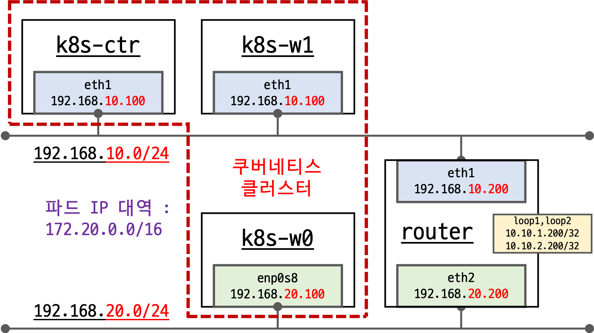
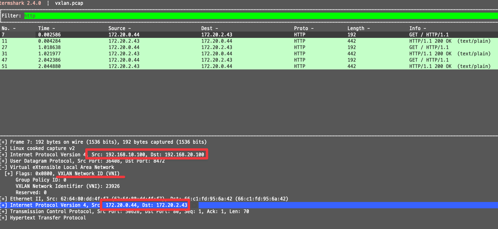
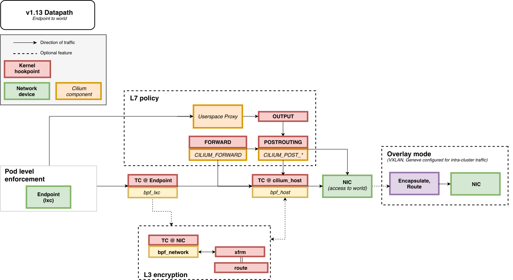
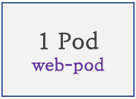
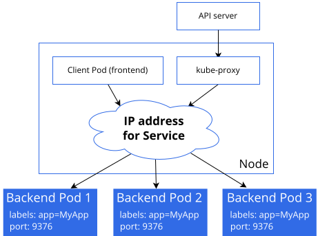
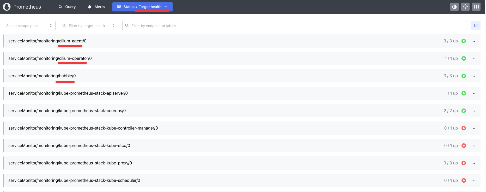

4주차 - Networking: 노드에 파드들간 통신 2 & K8S 외부 노출
- 실습 환경 구성
- 실습 환경 소개

- 기본 배포 가상 머신 : k8s-ctr(=192.168.10.100), k8s-w1(=192.168.10.101), k8s-w0, router
- router : 192.168.10.0/24 ↔ 192.168.20.0/24 대역 라우팅 역할, k8s 에 join 되지 않은 서버, loop1/loop2 dump 인터페이스 배치
- k8s-w0 : k8s-ctr/w1 노드와 다른 네트워크 대역에 배치
- 실습 동작에 필요한 static routing 설정 됨 with vagrant script file
Cilium CNI v1.18 설치 상태로 배포 완료됨 - Release , KrLink ← 박용철님이 한글로 정리해주셨습니다
- Minimum Linux Requirements: The minimum kernel version for this release series is Linux v5.10 or similar, such as RHEL 8.6
- Scale Test Results: Cilium implements policies and services up to 45% faster in higher scale environments
- Scale Test : 버전 마다 1000개 노드(‘3만개 파드 or 2.5개 Service / 40만개 백엔드)에서 성능 테스트 - Link
- Image Size Reduction: Docker image sizes are reduced by 32% on arm64 architecture images
- CRD Promotion to Stable: Promote CiliumCIDRGroup, CiliumLoadBalancerIPPool and all BGP CRDs to stable AP
- Multi-Pool Tunnel Routing: Add support for tunnel routing in multi-pool IPAM mode
- Policy Names in Hubble-CLI: Show the names of (C)CNPs that allowed or denied traffic when monitoring flows in Hubble
- Encapsulated Traffic Decoding: Hubble decodes encapsulated traffic for deeper introspection into traffic flows
- Route Aggregation: Add support for BGP route aggregation in the control plane
- 조하은님이 Cilium CNI v1.18 달라진점을 상세히 정리해주셨습니다 - Blog
실습 환경 배포 파일 작성
Vagrantfile : 가상머신 정의, 부팅 시 초기 프로비저닝 설정
# Variables K8SV = '1.33.2-1.1' # Kubernetes Version : apt list -a kubelet , ex) 1.32.5-1.1 CONTAINERDV = '1.7.27-1' # Containerd Version : apt list -a containerd.io , ex) 1.6.33-1 CILIUMV = '1.18.0' # Cilium CNI Version : https://github.com/cilium/cilium/tags N = 1 # max number of worker nodes # Base Image https://portal.cloud.hashicorp.com/vagrant/discover/bento/ubuntu-24.04 BOX_IMAGE = "bento/ubuntu-24.04" BOX_VERSION = "202502.21.0" Vagrant.configure("2") do |config| #-ControlPlane Node config.vm.define "k8s-ctr" do |subconfig| subconfig.vm.box = BOX_IMAGE subconfig.vm.box_version = BOX_VERSION subconfig.vm.provider "virtualbox" do |vb| vb.customize ["modifyvm", :id, "--groups", "/Cilium-Lab"] vb.customize ["modifyvm", :id, "--nicpromisc2", "allow-all"] vb.name = "k8s-ctr" vb.cpus = 2 vb.memory = 2560 vb.linked_clone = true end subconfig.vm.host_name = "k8s-ctr" subconfig.vm.network "private_network", ip: "192.168.10.100" subconfig.vm.network "forwarded_port", guest: 22, host: 60000, auto_correct: true, id: "ssh" subconfig.vm.synced_folder "./", "/vagrant", disabled: true subconfig.vm.provision "shell", path: "https://raw.githubusercontent.com/gasida/vagrant-lab/refs/heads/main/cilium-study/4w/init_cfg.sh", args: [ K8SV, CONTAINERDV ] subconfig.vm.provision "shell", path: "https://raw.githubusercontent.com/gasida/vagrant-lab/refs/heads/main/cilium-study/4w/k8s-ctr.sh", args: [ N, CILIUMV, K8SV ] subconfig.vm.provision "shell", path: "https://raw.githubusercontent.com/gasida/vagrant-lab/refs/heads/main/cilium-study/4w/route-add1.sh" end #-Worker Nodes Subnet1 (1..N).each do |i| config.vm.define "k8s-w#{i}" do |subconfig| subconfig.vm.box = BOX_IMAGE subconfig.vm.box_version = BOX_VERSION subconfig.vm.provider "virtualbox" do |vb| vb.customize ["modifyvm", :id, "--groups", "/Cilium-Lab"] vb.customize ["modifyvm", :id, "--nicpromisc2", "allow-all"] vb.name = "k8s-w#{i}" vb.cpus = 2 vb.memory = 1536 vb.linked_clone = true end subconfig.vm.host_name = "k8s-w#{i}" subconfig.vm.network "private_network", ip: "192.168.10.10#{i}" subconfig.vm.network "forwarded_port", guest: 22, host: "6000#{i}", auto_correct: true, id: "ssh" subconfig.vm.synced_folder "./", "/vagrant", disabled: true subconfig.vm.provision "shell", path: "https://raw.githubusercontent.com/gasida/vagrant-lab/refs/heads/main/cilium-study/4w/init_cfg.sh", args: [ K8SV, CONTAINERDV] subconfig.vm.provision "shell", path: "https://raw.githubusercontent.com/gasida/vagrant-lab/refs/heads/main/cilium-study/4w/k8s-w.sh" subconfig.vm.provision "shell", path: "https://raw.githubusercontent.com/gasida/vagrant-lab/refs/heads/main/cilium-study/4w/route-add1.sh" end end #-Router Node config.vm.define "router" do |subconfig| subconfig.vm.box = BOX_IMAGE subconfig.vm.box_version = BOX_VERSION subconfig.vm.provider "virtualbox" do |vb| vb.customize ["modifyvm", :id, "--groups", "/Cilium-Lab"] vb.name = "router" vb.cpus = 1 vb.memory = 768 vb.linked_clone = true end subconfig.vm.host_name = "router" subconfig.vm.network "private_network", ip: "192.168.10.200" subconfig.vm.network "forwarded_port", guest: 22, host: 60009, auto_correct: true, id: "ssh" subconfig.vm.network "private_network", ip: "192.168.20.200", auto_config: false subconfig.vm.synced_folder "./", "/vagrant", disabled: true subconfig.vm.provision "shell", path: "https://raw.githubusercontent.com/gasida/vagrant-lab/refs/heads/main/cilium-study/4w/router.sh" end #-Worker Nodes Subnet2 config.vm.define "k8s-w0" do |subconfig| subconfig.vm.box = BOX_IMAGE subconfig.vm.box_version = BOX_VERSION subconfig.vm.provider "virtualbox" do |vb| vb.customize ["modifyvm", :id, "--groups", "/Cilium-Lab"] vb.customize ["modifyvm", :id, "--nicpromisc2", "allow-all"] vb.name = "k8s-w0" vb.cpus = 2 vb.memory = 1536 vb.linked_clone = true end subconfig.vm.host_name = "k8s-w0" subconfig.vm.network "private_network", ip: "192.168.20.100" subconfig.vm.network "forwarded_port", guest: 22, host: 60010, auto_correct: true, id: "ssh" subconfig.vm.synced_folder "./", "/vagrant", disabled: true subconfig.vm.provision "shell", path: "https://raw.githubusercontent.com/gasida/vagrant-lab/refs/heads/main/cilium-study/4w/init_cfg.sh", args: [ K8SV, CONTAINERDV] subconfig.vm.provision "shell", path: "https://raw.githubusercontent.com/gasida/vagrant-lab/refs/heads/main/cilium-study/4w/k8s-w.sh" subconfig.vm.provision "shell", path: "https://raw.githubusercontent.com/gasida/vagrant-lab/refs/heads/main/cilium-study/4w/route-add2.sh" end end
init_cfg.sh : args 참고하여 설치
#!/usr/bin/env bash echo ">>>> Initial Config Start <<<<" echo "[TASK 1] Setting Profile & Bashrc" echo 'alias vi=vim' >> /etc/profile echo "sudo su -" >> /home/vagrant/.bashrc ln -sf /usr/share/zoneinfo/Asia/Seoul /etc/localtime # Change Timezone echo "[TASK 2] Disable AppArmor" systemctl stop ufw && systemctl disable ufw >/dev/null 2>&1 systemctl stop apparmor && systemctl disable apparmor >/dev/null 2>&1 echo "[TASK 3] Disable and turn off SWAP" swapoff -a && sed -i '/swap/s/^/#/' /etc/fstab echo "[TASK 4] Install Packages" apt update -qq >/dev/null 2>&1 apt-get install apt-transport-https ca-certificates curl gpg -y -qq >/dev/null 2>&1 # Download the public signing key for the Kubernetes package repositories. mkdir -p -m 755 /etc/apt/keyrings K8SMMV=$(echo $1 | sed -En 's/^([0-9]+\.[0-9]+)\..*/\1/p') curl -fsSL https://pkgs.k8s.io/core:/stable:/v$K8SMMV/deb/Release.key | sudo gpg --dearmor -o /etc/apt/keyrings/kubernetes-apt-keyring.gpg echo "deb [signed-by=/etc/apt/keyrings/kubernetes-apt-keyring.gpg] https://pkgs.k8s.io/core:/stable:/v$K8SMMV/deb/ /" >> /etc/apt/sources.list.d/kubernetes.list curl -fsSL https://download.docker.com/linux/ubuntu/gpg -o /etc/apt/keyrings/docker.asc echo "deb [arch=$(dpkg --print-architecture) signed-by=/etc/apt/keyrings/docker.asc] https://download.docker.com/linux/ubuntu $(. /etc/os-release && echo "$VERSION_CODENAME") stable" | tee /etc/apt/sources.list.d/docker.list > /dev/null # packets traversing the bridge are processed by iptables for filtering echo 1 > /proc/sys/net/ipv4/ip_forward echo "net.ipv4.ip_forward = 1" >> /etc/sysctl.d/k8s.conf # enable br_netfilter for iptables modprobe br_netfilter modprobe overlay echo "br_netfilter" >> /etc/modules-load.d/k8s.conf echo "overlay" >> /etc/modules-load.d/k8s.conf echo "[TASK 5] Install Kubernetes components (kubeadm, kubelet and kubectl)" # Update the apt package index, install kubelet, kubeadm and kubectl, and pin their version apt update >/dev/null 2>&1 # apt list -a kubelet ; apt list -a containerd.io apt-get install -y kubelet=$1 kubectl=$1 kubeadm=$1 containerd.io=$2 >/dev/null 2>&1 apt-mark hold kubelet kubeadm kubectl >/dev/null 2>&1 # containerd configure to default and cgroup managed by systemd containerd config default > /etc/containerd/config.toml sed -i 's/SystemdCgroup = false/SystemdCgroup = true/g' /etc/containerd/config.toml # avoid WARN&ERRO(default endpoints) when crictl run cat <<EOF > /etc/crictl.yaml runtime-endpoint: unix:///run/containerd/containerd.sock image-endpoint: unix:///run/containerd/containerd.sock EOF # ready to install for k8s systemctl restart containerd && systemctl enable containerd systemctl enable --now kubelet echo "[TASK 6] Install Packages & Helm" export DEBIAN_FRONTEND=noninteractive apt-get install -y bridge-utils sshpass net-tools conntrack ngrep tcpdump ipset arping wireguard jq yq tree bash-completion unzip kubecolor termshark >/dev/null 2>&1 curl -s https://raw.githubusercontent.com/helm/helm/master/scripts/get-helm-3 | bash >/dev/null 2>&1 echo ">>>> Initial Config End <<<<"
k8s-ctr.sh : kubeadm init, Cilium CNI 설치, 편리성 설정(k, kc), k9s, local-path-sc, metrics-server
kubeadm-init-ctr-config.yaml
apiVersion: kubeadm.k8s.io/v1beta4 kind: InitConfiguration bootstrapTokens: - token: "123456.1234567890123456" ttl: "0s" usages: - signing - authentication localAPIEndpoint: advertiseAddress: "192.168.10.100" nodeRegistration: kubeletExtraArgs: - name: node-ip value: "192.168.10.100" criSocket: "unix:///run/containerd/containerd.sock" --- apiVersion: kubeadm.k8s.io/v1beta4 kind: ClusterConfiguration kubernetesVersion: "K8S_VERSION_PLACEHOLDER" networking: podSubnet: "10.244.0.0/16" serviceSubnet: "10.96.0.0/16"
#!/usr/bin/env bash echo ">>>> K8S Controlplane config Start <<<<" echo "[TASK 1] Initial Kubernetes" curl --silent -o /root/kubeadm-init-ctr-config.yaml https://raw.githubusercontent.com/gasida/vagrant-lab/refs/heads/main/cilium-study/kubeadm-init-ctr-config.yaml K8SMMV=$(echo $3 | sed -En 's/^([0-9]+\.[0-9]+\.[0-9]+).*/\1/p') sed -i "s/K8S_VERSION_PLACEHOLDER/v${K8SMMV}/g" /root/kubeadm-init-ctr-config.yaml kubeadm init --config="/root/kubeadm-init-ctr-config.yaml" >/dev/null 2>&1 echo "[TASK 2] Setting kube config file" mkdir -p /root/.kube cp -i /etc/kubernetes/admin.conf /root/.kube/config chown $(id -u):$(id -g) /root/.kube/config echo "[TASK 3] Source the completion" echo 'source <(kubectl completion bash)' >> /etc/profile echo 'source <(kubeadm completion bash)' >> /etc/profile echo "[TASK 4] Alias kubectl to k" echo 'alias k=kubectl' >> /etc/profile echo 'alias kc=kubecolor' >> /etc/profile echo 'complete -F __start_kubectl k' >> /etc/profile echo "[TASK 5] Install Kubectx & Kubens" git clone https://github.com/ahmetb/kubectx /opt/kubectx >/dev/null 2>&1 ln -s /opt/kubectx/kubens /usr/local/bin/kubens ln -s /opt/kubectx/kubectx /usr/local/bin/kubectx echo "[TASK 6] Install Kubeps & Setting PS1" git clone https://github.com/jonmosco/kube-ps1.git /root/kube-ps1 >/dev/null 2>&1 cat <<"EOT" >> /root/.bash_profile source /root/kube-ps1/kube-ps1.sh KUBE_PS1_SYMBOL_ENABLE=true function get_cluster_short() { echo "$1" | cut -d . -f1 } KUBE_PS1_CLUSTER_FUNCTION=get_cluster_short KUBE_PS1_SUFFIX=') ' PS1='$(kube_ps1)'$PS1 EOT kubectl config rename-context "kubernetes-admin@kubernetes" "HomeLab" >/dev/null 2>&1 echo "[TASK 7] Install Cilium CNI" NODEIP=$(ip -4 addr show eth1 | grep -oP '(?<=inet\s)\d+(\.\d+){3}') helm repo add cilium https://helm.cilium.io/ >/dev/null 2>&1 helm repo update >/dev/null 2>&1 helm install cilium cilium/cilium --version $2 --namespace kube-system \ --set k8sServiceHost=192.168.10.100 --set k8sServicePort=6443 \ --set ipam.mode="cluster-pool" --set ipam.operator.clusterPoolIPv4PodCIDRList={"172.20.0.0/16"} --set ipv4NativeRoutingCIDR=172.20.0.0/16 \ --set routingMode=native --set autoDirectNodeRoutes=true \ --set kubeProxyReplacement=true --set bpf.masquerade=true --set installNoConntrackIptablesRules=true \ --set endpointHealthChecking.enabled=false --set healthChecking=false \ --set hubble.enabled=true --set hubble.relay.enabled=true --set hubble.ui.enabled=true \ --set hubble.ui.service.type=NodePort --set hubble.ui.service.nodePort=30003 \ --set prometheus.enabled=true --set operator.prometheus.enabled=true --set hubble.metrics.enableOpenMetrics=true \ --set hubble.metrics.enabled="{dns,drop,tcp,flow,port-distribution,icmp,httpV2:exemplars=true;labelsContext=source_ip\,source_namespace\,source_workload\,destination_ip\,destination_namespace\,destination_workload\,traffic_direction}" \ --set operator.replicas=1 --set debug.enabled=true >/dev/null 2>&1 echo "[TASK 8] Install Cilium / Hubble CLI" CILIUM_CLI_VERSION=$(curl -s https://raw.githubusercontent.com/cilium/cilium-cli/main/stable.txt) CLI_ARCH=amd64 if [ "$(uname -m)" = "aarch64" ]; then CLI_ARCH=arm64; fi curl -L --fail --remote-name-all https://github.com/cilium/cilium-cli/releases/download/${CILIUM_CLI_VERSION}/cilium-linux-${CLI_ARCH}.tar.gz >/dev/null 2>&1 tar xzvfC cilium-linux-${CLI_ARCH}.tar.gz /usr/local/bin rm cilium-linux-${CLI_ARCH}.tar.gz HUBBLE_VERSION=$(curl -s https://raw.githubusercontent.com/cilium/hubble/master/stable.txt) HUBBLE_ARCH=amd64 if [ "$(uname -m)" = "aarch64" ]; then HUBBLE_ARCH=arm64; fi curl -L --fail --remote-name-all https://github.com/cilium/hubble/releases/download/$HUBBLE_VERSION/hubble-linux-${HUBBLE_ARCH}.tar.gz >/dev/null 2>&1 tar xzvfC hubble-linux-${HUBBLE_ARCH}.tar.gz /usr/local/bin rm hubble-linux-${HUBBLE_ARCH}.tar.gz echo "[TASK 9] Remove node taint" kubectl taint nodes k8s-ctr node-role.kubernetes.io/control-plane- echo "[TASK 10] local DNS with hosts file" echo "192.168.10.100 k8s-ctr" >> /etc/hosts echo "192.168.10.200 router" >> /etc/hosts echo "192.168.20.100 k8s-w0" >> /etc/hosts for (( i=1; i<=$1; i++ )); do echo "192.168.10.10$i k8s-w$i" >> /etc/hosts; done echo "[TASK 11] Dynamically provisioning persistent local storage with Kubernetes" kubectl apply -f https://raw.githubusercontent.com/rancher/local-path-provisioner/v0.0.31/deploy/local-path-storage.yaml >/dev/null 2>&1 kubectl patch storageclass local-path -p '{"metadata": {"annotations":{"storageclass.kubernetes.io/is-default-class":"true"}}}' >/dev/null 2>&1 echo "[TASK 12] Install Prometheus & Grafana" kubectl apply -f https://raw.githubusercontent.com/cilium/cilium/1.18.0/examples/kubernetes/addons/prometheus/monitoring-example.yaml >/dev/null 2>&1 kubectl patch svc -n cilium-monitoring prometheus -p '{"spec": {"type": "NodePort", "ports": [{"port": 9090, "targetPort": 9090, "nodePort": 30001}]}}' >/dev/null 2>&1 kubectl patch svc -n cilium-monitoring grafana -p '{"spec": {"type": "NodePort", "ports": [{"port": 3000, "targetPort": 3000, "nodePort": 30002}]}}' >/dev/null 2>&1 # echo "[TASK 12] Install Prometheus Stack" # helm repo add prometheus-community https://prometheus-community.github.io/helm-charts >/dev/null 2>&1 # cat <<EOT > monitor-values.yaml # prometheus: # prometheusSpec: # scrapeInterval: "15s" # evaluationInterval: "15s" # service: # type: NodePort # nodePort: 30001 # grafana: # defaultDashboardsTimezone: Asia/Seoul # adminPassword: prom-operator # service: # type: NodePort # nodePort: 30002 # alertmanager: # enabled: false # defaultRules: # create: false # prometheus-windows-exporter: # prometheus: # monitor: # enabled: false # EOT # helm install kube-prometheus-stack prometheus-community/kube-prometheus-stack --version 75.15.1 \ # -f monitor-values.yaml --create-namespace --namespace monitoring >/dev/null 2>&1 echo "[TASK 13] Install Metrics-server" helm repo add metrics-server https://kubernetes-sigs.github.io/metrics-server/ >/dev/null 2>&1 helm upgrade --install metrics-server metrics-server/metrics-server --set 'args[0]=--kubelet-insecure-tls' -n kube-system >/dev/null 2>&1 echo "[TASK 14] Install k9s" CLI_ARCH=amd64 if [ "$(uname -m)" = "aarch64" ]; then CLI_ARCH=arm64; fi wget https://github.com/derailed/k9s/releases/latest/download/k9s_linux_${CLI_ARCH}.deb -O /tmp/k9s_linux_${CLI_ARCH}.deb >/dev/null 2>&1 apt install /tmp/k9s_linux_${CLI_ARCH}.deb >/dev/null 2>&1 echo ">>>> K8S Controlplane Config End <<<<"
k8s-w.sh : kubeadm join
kubeadm-join-worker-config.yaml
apiVersion: kubeadm.k8s.io/v1beta4 kind: JoinConfiguration discovery: bootstrapToken: token: "123456.1234567890123456" apiServerEndpoint: "192.168.10.100:6443" unsafeSkipCAVerification: true nodeRegistration: criSocket: "unix:///run/containerd/containerd.sock" kubeletExtraArgs: - name: node-ip value: "NODE_IP_PLACEHOLDER"
#!/usr/bin/env bash echo ">>>> K8S Node config Start <<<<" echo "[TASK 1] K8S Controlplane Join" curl --silent -o /root/kubeadm-join-worker-config.yaml https://raw.githubusercontent.com/gasida/vagrant-lab/refs/heads/main/cilium-study/2w/kubeadm-join-worker-config.yaml NODEIP=$(ip -4 addr show eth1 | grep -oP '(?<=inet\s)\d+(\.\d+){3}') sed -i "s/NODE_IP_PLACEHOLDER/${NODEIP}/g" /root/kubeadm-join-worker-config.yaml kubeadm join --config="/root/kubeadm-join-worker-config.yaml" > /dev/null 2>&1 echo ">>>> K8S Node config End <<<<"
route-add1.sh : k8s node 들이 내부망과 통신을 위한 route 설정
#!/usr/bin/env bash echo ">>>> Route Add Config Start <<<<" chmod 600 /etc/netplan/01-netcfg.yaml chmod 600 /etc/netplan/50-vagrant.yaml cat <<EOT>> /etc/netplan/50-vagrant.yaml routes: - to: 192.168.20.0/24 via: 192.168.10.200 - to: 172.20.0.0/16 via: 192.168.10.200 - to: 10.10.0.0/16 via: 192.168.10.200 EOT netplan apply echo ">>>> Route Add Config End <<<<"
route-add2.sh : k8s node 들이 내부망과 통신을 위한 route 설정
#!/usr/bin/env bash echo ">>>> Route Add Config Start <<<<" chmod 600 /etc/netplan/01-netcfg.yaml chmod 600 /etc/netplan/50-vagrant.yaml cat <<EOT>> /etc/netplan/50-vagrant.yaml routes: - to: 192.168.10.0/24 via: 192.168.20.200 - to: 172.20.0.0/16 via: 192.168.20.200 - to: 10.10.0.0/16 via: 192.168.20.200 EOT netplan apply echo ">>>> Route Add Config End <<<<"
router.sh : router 역할의 (웹) 서버
#!/usr/bin/env bash echo ">>>> Initial Config Start <<<<" echo "[TASK 0] Setting eth2" chmod 600 /etc/netplan/01-netcfg.yaml chmod 600 /etc/netplan/50-vagrant.yaml cat << EOT >> /etc/netplan/50-vagrant.yaml eth2: addresses: - 192.168.20.200/24 EOT netplan apply echo "[TASK 1] Setting Profile & Bashrc" echo 'alias vi=vim' >> /etc/profile echo "sudo su -" >> /home/vagrant/.bashrc ln -sf /usr/share/zoneinfo/Asia/Seoul /etc/localtime echo "[TASK 2] Disable AppArmor" systemctl stop ufw && systemctl disable ufw >/dev/null 2>&1 systemctl stop apparmor && systemctl disable apparmor >/dev/null 2>&1 echo "[TASK 3] Add Kernel setting - IP Forwarding" sed -i 's/#net.ipv4.ip_forward=1/net.ipv4.ip_forward=1/g' /etc/sysctl.conf sysctl -p >/dev/null 2>&1 echo "[TASK 4] Setting Dummy Interface" modprobe dummy ip link add loop1 type dummy ip link set loop1 up ip addr add 10.10.1.200/24 dev loop1 ip link add loop2 type dummy ip link set loop2 up ip addr add 10.10.2.200/24 dev loop2 echo "[TASK 5] Install Packages" export DEBIAN_FRONTEND=noninteractive apt update -qq >/dev/null 2>&1 apt-get install net-tools jq yq tree ngrep tcpdump arping termshark -y -qq >/dev/null 2>&1 echo "[TASK 6] Install Apache" apt install apache2 -y >/dev/null 2>&1 echo -e "<h1>Web Server : $(hostname)</h1>" > /var/www/html/index.html echo ">>>> Initial Config End <<<<"
mkdir cilium-lab && cd cilium-lab curl -O https://raw.githubusercontent.com/gasida/vagrant-lab/refs/heads/main/cilium-study/4w/Vagrantfile vagrant up
실습 환경 배포 :
vagrant up- [k8s-ctr] 접속 후 기본 정보 확인
# k9s 설치되어 있음 CLI_ARCH=amd64 if [ "$(uname -m)" = "aarch64" ]; then CLI_ARCH=arm64; fi wget https://github.com/derailed/k9s/releases/latest/download/k9s_linux_${CLI_ARCH}.deb -O /tmp/k9s_linux_${CLI_ARCH}.deb apt install /tmp/k9s_linux_${CLI_ARCH}.deb k9s # node/pod 정보 확인 - metrics-server 설치되어 있어서, cpu/mem 확인 가능 # cat /etc/hosts sshpass -p 'vagrant' ssh -o StrictHostKeyChecking=no vagrant@k8s-w0 hostname sshpass -p 'vagrant' ssh -o StrictHostKeyChecking=no vagrant@k8s-w1 hostname sshpass -p 'vagrant' ssh -o StrictHostKeyChecking=no vagrant@router hostname # 클러스터 정보 확인 kubectl cluster-info kubectl cluster-info dump | grep -m 2 -E "cluster-cidr|service-cluster-ip-range" kubectl describe cm -n kube-system kubeadm-config kubectl describe cm -n kube-system kubelet-config # 노드 정보 : 상태, INTERNAL-IP 확인 ifconfig | grep -iEA1 'eth[0-9]:' kubectl get node -owide # 파드 정보 : 상태, 파드 IP 확인 kubectl get nodes -o jsonpath='{range .items[*]}{.metadata.name}{"\t"}{.spec.podCIDR}{"\n"}{end}' kubectl get ciliumnode -o json | grep podCIDRs -A2 kubectl get pod -A -owide kubectl get ciliumendpoints -A # ipam 모드 확인 cilium config view | grep ^ipam # iptables 확인 iptables-save iptables -t nat -S iptables -t filter -S iptables -t mangle -S iptables -t raw -S
- [k8s-ctr] cilium 설치 정보 확인
# cilium 상태 확인 kubectl get cm -n kube-system cilium-config -o json | jq cilium status cilium config view # kubectl exec -n kube-system -c cilium-agent -it ds/cilium -- cilium-dbg status --verbose kubectl exec -n kube-system -c cilium-agent -it ds/cilium -- cilium-dbg metrics list # monitor kubectl exec -n kube-system -c cilium-agent -it ds/cilium -- cilium-dbg monitor kubectl exec -n kube-system -c cilium-agent -it ds/cilium -- cilium-dbg monitor -v kubectl exec -n kube-system -c cilium-agent -it ds/cilium -- cilium-dbg monitor -v -v ## Filter for only the events related to endpoint kubectl exec -n kube-system -c cilium-agent -it ds/cilium -- cilium-dbg monitor --related-to=<id> ## Show notifications only for dropped packet events kubectl exec -n kube-system -c cilium-agent -it ds/cilium -- cilium-dbg monitor --type drop ## Don’t dissect packet payload, display payload in hex information kubectl exec -n kube-system -c cilium-agent -it ds/cilium -- cilium-dbg monitor -v -v --hex ## Layer7 kubectl exec -n kube-system -c cilium-agent -it ds/cilium -- cilium-dbg monitor -v --type l7
- [k8s-ctr] 접속 후 기본 정보 확인
네트워크 정보 확인 :
autoDirectNodeRoutes=true동작 이해# router 네트워크 인터페이스 정보 확인 sshpass -p 'vagrant' ssh vagrant@router ip -br -c -4 addr lo UNKNOWN 127.0.0.1/8 eth0 UP 10.0.2.15/24 metric 100 eth1 UP 192.168.10.200/24 eth2 UP 192.168.20.200/24 loop1 UNKNOWN 10.10.1.200/24 loop2 UNKNOWN 10.10.2.200/24 # k8s node 네트워크 인터페이스 정보 확인 ip -c -4 addr show dev eth1 sshpass -p 'vagrant' ssh vagrant@k8s-w1 ip -c -4 addr show dev eth1 sshpass -p 'vagrant' ssh vagrant@k8s-w0 ip -c -4 addr show dev eth1 # 라우팅 정보 확인 sshpass -p 'vagrant' ssh vagrant@router ip -c route ip -c route | grep static ## --set routingMode=native --set autoDirectNodeRoutes=true 동작을 정확히 이해해보자! ip -c route sshpass -p 'vagrant' ssh vagrant@k8s-w1 ip -c route sshpass -p 'vagrant' ssh vagrant@k8s-w0 ip -c route # 통신 확인 ping -c 1 10.10.1.200 # router loop1 ping -c 1 192.168.20.100 # k8s-w0 eth1 # 목적지까지 경우하는 라우팅 정보 제공 ## Path MTU (pmtu): 출발지에서 목적지까지 모든 네트워크 경로 상에서 통과할 수 있는 최대 패킷 크기(Byte), IP fragmentation 없이 전송 가능한 가장 큰 패킷 크기를 의미. ## pmtu 1500: 전체 경로의 최소 MTU는 1500 , hops 2: 총 2단계 라우터/노드를 거쳐서 도달 , back 2: 응답도 동일한 hop 수로 돌아옴 tracepath -n 192.168.20.100 1?: [LOCALHOST] pmtu 1500 1: 192.168.10.200 1.222ms 1: 192.168.10.200 0.980ms 2: 192.168.20.100 1.620ms reached Resume: pmtu 1500 hops 2 back 2
도전과제0Cilium 1.17.6 버전을 배포 후 Live 상태에서 Cilium 1.18.0 업그레이드 및 고려사항 정리 - Docs- 박용철님이 공식 문서 Cilium 업그레이드 가이드 내용을 한글로 정리해주셨습니다 - Link
- 실습 환경 소개
- Native Routing mode
1.1. 샘플 애플리케이션 배포 및 확인 :
cilium-dbg- 샘플 애플리케이션 배포
# 샘플 애플리케이션 배포 cat << EOF | kubectl apply -f - apiVersion: apps/v1 kind: Deployment metadata: name: webpod spec: replicas: 3 selector: matchLabels: app: webpod template: metadata: labels: app: webpod spec: affinity: podAntiAffinity: requiredDuringSchedulingIgnoredDuringExecution: - labelSelector: matchExpressions: - key: app operator: In values: - sample-app topologyKey: "kubernetes.io/hostname" containers: - name: webpod image: traefik/whoami ports: - containerPort: 80 --- apiVersion: v1 kind: Service metadata: name: webpod labels: app: webpod spec: selector: app: webpod ports: - protocol: TCP port: 80 targetPort: 80 type: ClusterIP EOF # k8s-ctr 노드에 curl-pod 파드 배포 cat <<EOF | kubectl apply -f - apiVersion: v1 kind: Pod metadata: name: curl-pod labels: app: curl spec: nodeName: k8s-ctr containers: - name: curl image: nicolaka/netshoot command: ["tail"] args: ["-f", "/dev/null"] terminationGracePeriodSeconds: 0 EOF
- 확인 :
cilium-dbg# 배포 확인 kubectl get deploy,svc,ep webpod -owide NAME READY UP-TO-DATE AVAILABLE AGE CONTAINERS IMAGES SELECTOR deployment.apps/webpod 3/3 3 3 22s webpod traefik/whoami app=webpod NAME TYPE CLUSTER-IP EXTERNAL-IP PORT(S) AGE SELECTOR service/webpod ClusterIP 10.96.112.15 <none> 80/TCP 22s app=webpod NAME ENDPOINTS AGE endpoints/webpod 172.20.0.91:80,172.20.1.50:80,172.20.2.199:80 22s kubectl get endpointslices -l app=webpod kubectl get ciliumendpoints # IP 확인 NAME SECURITY IDENTITY ENDPOINT STATE IPV4 IPV6 curl-pod 3131 ready 172.20.0.20 webpod-697b545f57-ftrx9 15436 ready 172.20.1.50 webpod-697b545f57-rskf8 15436 ready 172.20.2.199 webpod-697b545f57-vbtsx 15436 ready 172.20.0.91 # kubectl exec -n kube-system ds/cilium -- cilium-dbg ip list kubectl exec -n kube-system ds/cilium -- cilium-dbg endpoint list # webpod deploy pod들의 ip kubectl exec -n kube-system ds/cilium -- cilium-dbg service list 20 10.96.112.15:80/TCP ClusterIP 1 => 172.20.0.91:80/TCP (active) 2 => 172.20.1.50:80/TCP (active) 3 => 172.20.2.199:80/TCP (active) kubectl exec -n kube-system ds/cilium -- cilium-dbg bpf lb list kubectl exec -n kube-system ds/cilium -- cilium-dbg bpf lb list | grep 10.96.112.15 10.96.112.15:80/TCP (1) 172.20.0.91:80/TCP (20) (1) 10.96.112.15:80/TCP (0) 0.0.0.0:0 (20) (0) [ClusterIP, non-routable] 10.96.112.15:80/TCP (3) 172.20.2.199:80/TCP (20) (3) 10.96.112.15:80/TCP (2) 172.20.1.50:80/TCP (20) (2) kubectl exec -n kube-system ds/cilium -- cilium-dbg bpf nat list # map kubectl exec -n kube-system ds/cilium -- cilium-dbg map list | grep -v '0 0' Name Num entries Num errors Cache enabled cilium_lb4_backends_v3 16 0 true cilium_lb4_reverse_nat 20 0 true cilium_runtime_config 256 0 true cilium_policy_v2_01061 3 0 true cilium_lb4_services_v2 45 0 true cilium_ipcache_v2 22 0 true cilium_lxc 1 0 true cilium_policy_v2_01990 2 0 true kubectl exec -n kube-system ds/cilium -- cilium-dbg map get cilium_lb4_services_v2 kubectl exec -n kube-system ds/cilium -- cilium-dbg map get cilium_lb4_services_v2 | grep 10.96.112.15 10.96.112.15:80/TCP (2) 15 0[0] (20) [0x0 0x0] 10.96.112.15:80/TCP (1) 14 0[0] (20) [0x0 0x0] 10.96.112.15:80/TCP (3) 16 0[0] (20) [0x0 0x0] 10.96.112.15:80/TCP (0) 0 3[0] (20) [0x0 0x0] kubectl exec -n kube-system ds/cilium -- cilium-dbg map get cilium_lb4_backends_v3 kubectl exec -n kube-system ds/cilium -- cilium-dbg map get cilium_lb4_reverse_nat kubectl exec -n kube-system ds/cilium -- cilium-dbg map get cilium_ipcache_v2
- 샘플 애플리케이션 배포
1.2. 통신 확인 & hubble → 문제를 해결하려먼 어떻게 해야 될까? 방안1 (라우팅 설정 - 수동 or 자동 BGP), 방안2 (Overlay Network)
# 통신 확인 : 문제 확인 kubectl exec -it curl-pod -- curl webpod | grep Hostname kubectl exec -it curl-pod -- sh -c 'while true; do curl -s --connect-timeout 1 webpod | grep Hostname; echo "---" ; sleep 1; done' # k8s-w0 노드에 배포된 webpod 파드 IP 지정 export WEBPOD=$(kubectl get pod -l app=webpod --field-selector spec.nodeName=k8s-w0 -o jsonpath='{.items[0].status.podIP}') echo $WEBPOD # 신규 터미널 [router] tcpdump -i any icmp -nn # kubectl exec -it curl-pod -- ping -c 2 -w 1 -W 1 $WEBPOD # 신규 터미널 [router] : 라우팅이 어떻게 되는가? tcpdump -i any icmp -nn 02:30:10.329084 eth1 In IP 172.20.0.20 > 172.20.2.199: ICMP echo request, id 157, seq 1, length 64 02:30:10.329091 eth0 Out IP 172.20.0.20 > 172.20.2.199: ICMP echo request, id 157, seq 1, length 64 # 신규 터미널 [router] ip -c route ip route get 172.20.2.199 172.20.2.199 via 10.0.2.2 dev eth0 src 10.0.2.15 uid 0 kubectl get po -o wide NAME READY STATUS RESTARTS AGE IP NODE NOMINATED NODE READINESS GATES curl-pod 1/1 Running 0 29m 172.20.0.20 k8s-ctr <none> <none> webpod-697b545f57-ftrx9 1/1 Running 0 29m 172.20.1.50 k8s-w1 <none> <none> webpod-697b545f57-rskf8 1/1 Running 0 29m 172.20.2.199 k8s-w0 <none> <none> webpod-697b545f57-vbtsx 1/1 Running 0 29m 172.20.0.91 k8s-ctr <none> <none> (⎈|HomeLab:N/A) root@k8s-ctr:~# # 현재 curl pod에서 webpod service로 curl을 하면 k8s-w0에 있는 pod로는 정상적으로 통신되지 않는다. # cilium이 native routeing mode이고 k8s-w0는 다른 network에 있으므로 curl-pod가 있는 k8s-ctr node에 static route를 잡아주지 않는이상 통신이 안됨!! kubectl exec -it curl-pod -- sh -c 'while true; do curl -s --connect-timeout 1 webpod | grep Hostname; echo "---" ; sleep 1; done' --- Hostname: webpod-697b545f57-ftrx9 --- Hostname: webpod-697b545f57-ftrx9 --- Hostname: webpod-697b545f57-vbtsx --- Hostname: webpod-697b545f57-vbtsx --- --- # 신규 터미널 [router] ip -br -c -4 addr lo UNKNOWN 127.0.0.1/8 eth0 UP 10.0.2.15/24 metric 100 eth1 UP 192.168.10.200/24 eth2 UP 192.168.20.200/24 loop1 UNKNOWN 10.10.1.200/24 loop2 UNKNOWN 10.10.2.200/24 # curl-pod에서 k8s-w0 node의 pod가는 packet이 보인다. # k8s-ctr은 자신의 네트워크가 아니므로 linux route설정대로 router node의 eth1로 보냄 # router node에 172.20.2.199.80에 대한 경로가 없으므로 default인 eth0로 Out하고 packet은 drop된다.(아무런 route 경로가 없기 떄문에) tcpdump -i any tcp port 80 -nn 02:39:38.917691 eth1 In IP 172.20.0.20.54336 > 172.20.2.199.80: Flags [S], seq 2753410462, win 64240, options [mss 1460,sackOK,TS val 637432381 ecr 0,nop,wscale 7], length 0 02:39:38.917703 eth0 Out IP 172.20.0.20.54336 > 172.20.2.199.80: Flags [S], seq 2753410462, win 64240, options [mss 1460,sackOK,TS val 637432381 ecr 0,nop,wscale 7], length 0 02:39:44.944920 eth1 In IP 172.20.0.20.41878 > 172.20.2.199.80: Flags [S], seq 2633310556, win 64240, options [mss 1460,sackOK,TS val 637438408 ecr 0,nop,wscale 7], length 0 02:39:44.944932 eth0 Out IP 172.20.0.20.41878 > 172.20.2.199.80: Flags [S], seq 2633310556, win 64240, options [mss 1460,sackOK,TS val 637438408 ecr 0,nop,wscale 7], length 0 # hubble 확인 # hubble ui 웹 접속 주소 확인 : default 네임스페이스 확인 NODEIP=$(ip -4 addr show eth1 | grep -oP '(?<=inet\s)\d+(\.\d+){3}') echo -e "http://$NODEIP:30003" # hubble relay 포트 포워딩 실행 cilium hubble port-forward& hubble status # flow log 모니터링 hubble observe -f --protocol tcp --pod curl-pod
도전과제1직접 router 에 static route 설정해서 문제 해결 후 트래픽 확인해보세요. 실습 완료 후 해당 설정은 다시 삭제해주세요.- 현재는 노드가 총 3대이지만, 노드가 100대 이상되고, PodCIDR가 변경될때는 어떻게 해야 될까요?


{kind=link}
{kind=link}
{kind=link}
- Overlay Network (Encapsulation) mode
2.1. Encapsulation VXLAN 설정 - Docs
# [커널 구성 옵션] Requirements for Tunneling and Routing grep -E 'CONFIG_VXLAN=y|CONFIG_VXLAN=m|CONFIG_GENEVE=y|CONFIG_GENEVE=m|CONFIG_FIB_RULES=y' /boot/config-$(uname -r) CONFIG_FIB_RULES=y # 커널에 내장됨 CONFIG_VXLAN=m # 모듈로 컴파일됨 → 커널에 로드해서 사용 CONFIG_GENEVE=m # 모듈로 컴파일됨 → 커널에 로드해서 사용 # 커널 로드 lsmod | grep -E 'vxlan|geneve' modprobe vxlan # modprobe geneve lsmod | grep -E 'vxlan|geneve' vxlan 147456 0 ip6_udp_tunnel 16384 1 vxlan udp_tunnel 36864 1 vxlan for i in w1 w0 ; do echo ">> node : k8s-$i <<"; sshpass -p 'vagrant' ssh vagrant@k8s-$i sudo modprobe vxlan ; echo; done for i in w1 w0 ; do echo ">> node : k8s-$i <<"; sshpass -p 'vagrant' ssh vagrant@k8s-$i sudo lsmod | grep -E 'vxlan|geneve' ; echo; done # k8s-w1 노드에 배포된 webpod 파드 IP 지정 export WEBPOD1=$(kubectl get pod -l app=webpod --field-selector spec.nodeName=k8s-w1 -o jsonpath='{.items[0].status.podIP}') echo $WEBPOD1 # 반복 ping 실행해두기 # 중간에 vxlan mode로 변경되면서 순단이 발생!! kubectl exec -it curl-pod -- ping $WEBPOD1 64 bytes from 172.20.1.50: icmp_seq=87 ttl=62 time=0.319 ms 64 bytes from 172.20.1.50: icmp_seq=88 ttl=62 time=0.486 ms 64 bytes from 172.20.1.50: icmp_seq=89 ttl=62 time=0.538 ms From 172.20.0.97 icmp_seq=90 Time to live exceeded 64 bytes from 172.20.1.50: icmp_seq=103 ttl=63 time=0.401 ms 64 bytes from 172.20.1.50: icmp_seq=104 ttl=63 time=0.816 ms 64 bytes from 172.20.1.50: icmp_seq=105 ttl=63 time=0.537 ms # 업그레이드 # native routing을 비활성화하고 vxlan routing을 활성화시킴!! helm upgrade cilium cilium/cilium --namespace kube-system --version 1.18.0 --reuse-values \ --set routingMode=tunnel --set tunnelProtocol=vxlan \ --set autoDirectNodeRoutes=false --set installNoConntrackIptablesRules=false kubectl rollout restart -n kube-system ds/cilium # 설정 확인 cilium features status cilium features status | grep datapath_network Yes cilium_feature_datapath_network mode=overlay-vxlan 1 1 1 kubectl exec -it -n kube-system ds/cilium -- cilium status | grep ^Routing Routing: Network: Tunnel [vxlan] Host: BPF cilium config view | grep tunnel routing-mode tunnel tunnel-protocol vxlan tunnel-source-port-range 0-0 # cilium_vxlan 확인 ip -c addr show dev cilium_vxlan 26: cilium_vxlan: <BROADCAST,MULTICAST,UP,LOWER_UP> mtu 1500 qdisc noqueue state UNKNOWN group default link/ether 26:40:12:9b:72:e6 brd ff:ff:ff:ff:ff:ff inet6 fe80::2440:12ff:fe9b:72e6/64 scope link valid_lft forever preferred_lft forever # 모든 node에 clilum_vxlan이라는 virtual interface가 생성됨 for i in w1 w0 ; do echo ">> node : k8s-$i <<"; sshpass -p 'vagrant' ssh vagrant@k8s-$i ip -c addr show dev cilium_vxlan ; echo; done >> node : k8s-w1 << 8: cilium_vxlan: <BROADCAST,MULTICAST,UP,LOWER_UP> mtu 1500 qdisc noqueue state UNKNOWN group default link/ether 72:2e:b1:91:d7:1d brd ff:ff:ff:ff:ff:ff inet6 fe80::702e:b1ff:fe91:d71d/64 scope link valid_lft forever preferred_lft forever >> node : k8s-w0 << 8: cilium_vxlan: <BROADCAST,MULTICAST,UP,LOWER_UP> mtu 1500 qdisc noqueue state UNKNOWN group default link/ether a6:99:e3:01:bd:b2 brd ff:ff:ff:ff:ff:ff inet6 fe80::a499:e3ff:fe01:bdb2/64 scope link valid_lft forever preferred_lft forever # 라우팅 정보 확인 : k8s node 간 다른 네트워크 대역에 있더라도, 파드의 네트워크 대역 정보가 라우팅에 올라왔다! # k8s-w0 노드는 원래 다른 네트워크에 있었으므로, native routing의 경우에는 routing 정보를 static하게 추가해주지 않는이상 알수가 없었다. # 현재 vxlan mode에서는 cilium-agent에 의해서 자동적으로 routing 정보에 k8s-w0 노드의 pod ip대역이 추가되어있는것을 볼 수 있다. # 모든 pod ip range에 대한 통신은 cilium_host를 통해서 통신이 이루어진다. # cilium_agent pod에 의해서 추가되는 if 및 ip(cilum ipam에서 관리)로 실제로 pod가 생성되지는 않고 routing만 추가된다. ip -c route | grep cilium_host 172.20.0.0/24 via 172.20.0.97 dev cilium_host proto kernel src 172.20.0.97 172.20.0.97 dev cilium_host proto kernel scope link 172.20.1.0/24 via 172.20.0.97 dev cilium_host proto kernel src 172.20.0.97 mtu 1450 172.20.2.0/24 via 172.20.0.97 dev cilium_host proto kernel src 172.20.0.97 mtu 1450 ip route get 172.20.1.10 ip route get 172.20.2.10 # 마찬가지로 나머지 두 worker node에도 cilium_host라는 interface가 생성되어있다. for i in w1 w0 ; do echo ">> node : k8s-$i <<"; sshpass -p 'vagrant' ssh vagrant@k8s-$i ip -c route | grep cilium_host ; echo; done >> node : k8s-w1 << 172.20.0.0/24 via 172.20.1.141 dev cilium_host proto kernel src 172.20.1.141 mtu 1450 172.20.1.0/24 via 172.20.1.141 dev cilium_host proto kernel src 172.20.1.141 172.20.1.141 dev cilium_host proto kernel scope link 172.20.2.0/24 via 172.20.1.141 dev cilium_host proto kernel src 172.20.1.141 mtu 1450 >> node : k8s-w0 << 172.20.0.0/24 via 172.20.2.198 dev cilium_host proto kernel src 172.20.2.198 mtu 1450 172.20.1.0/24 via 172.20.2.198 dev cilium_host proto kernel src 172.20.2.198 mtu 1450 172.20.2.0/24 via 172.20.2.198 dev cilium_host proto kernel src 172.20.2.198 172.20.2.198 dev cilium_host proto kernel scope link # cilium 파드 이름 지정 export CILIUMPOD0=$(kubectl get -l k8s-app=cilium pods -n kube-system --field-selector spec.nodeName=k8s-ctr -o jsonpath='{.items[0].metadata.name}') export CILIUMPOD1=$(kubectl get -l k8s-app=cilium pods -n kube-system --field-selector spec.nodeName=k8s-w1 -o jsonpath='{.items[0].metadata.name}') export CILIUMPOD2=$(kubectl get -l k8s-app=cilium pods -n kube-system --field-selector spec.nodeName=k8s-w0 -o jsonpath='{.items[0].metadata.name}') echo $CILIUMPOD0 $CILIUMPOD1 $CILIUMPOD2 # router 역할 IP 확인 kubectl exec -it $CILIUMPOD0 -n kube-system -c cilium-agent -- cilium status --all-addresses | grep router kubectl exec -it $CILIUMPOD1 -n kube-system -c cilium-agent -- cilium status --all-addresses | grep router kubectl exec -it $CILIUMPOD2 -n kube-system -c cilium-agent -- cilium status --all-addresses | grep router 172.20.0.97 (router) 172.20.1.141 (router) 172.20.2.198 (router) # kubectl exec -n kube-system ds/cilium -- cilium-dbg bpf ipcache list kubectl exec -n kube-system $CILIUMPOD0 -- cilium-dbg bpf ipcache list IP PREFIX/ADDRESS IDENTITY 192.168.10.100/32 identity=1 encryptkey=0 tunnelendpoint=0.0.0.0 flags=<none> 0.0.0.0/0 identity=2 encryptkey=0 tunnelendpoint=0.0.0.0 flags=<none> 172.20.0.7/32 identity=1710 encryptkey=0 tunnelendpoint=0.0.0.0 flags=<none> 172.20.0.133/32 identity=21124 encryptkey=0 tunnelendpoint=0.0.0.0 flags=<none> 172.20.0.236/32 identity=9107 encryptkey=0 tunnelendpoint=0.0.0.0 flags=<none> 172.20.1.0/24 identity=2 encryptkey=0 tunnelendpoint=192.168.10.101 flags=hastunnel # w1의 pod ip range에 대해서 tunneling 172.20.2.198/32 identity=6 encryptkey=0 tunnelendpoint=192.168.20.100 flags=hastunnel # w0의 cilium_host ip tunneling 172.20.2.199/32 identity=15436 encryptkey=0 tunnelendpoint=192.168.20.100 flags=hastunnel # w0의 webpod ip tunneling 172.20.2.0/24 identity=2 encryptkey=0 tunnelendpoint=192.168.20.100 flags=hastunnel # w0의 pod ip range tunneling 10.0.2.15/32 identity=1 encryptkey=0 tunnelendpoint=0.0.0.0 flags=<none> 172.20.0.20/32 identity=3131 encryptkey=0 tunnelendpoint=0.0.0.0 flags=<none> 172.20.0.23/32 identity=15335 encryptkey=0 tunnelendpoint=0.0.0.0 flags=<none> 172.20.0.97/32 identity=1 encryptkey=0 tunnelendpoint=0.0.0.0 flags=<none> 172.20.0.244/32 identity=9107 encryptkey=0 tunnelendpoint=0.0.0.0 flags=<none> # w1의 cilium_host ip tunneling 172.20.1.141/32 identity=6 encryptkey=0 tunnelendpoint=192.168.10.101 flags=hastunnel 172.20.0.21/32 identity=2073 encryptkey=0 tunnelendpoint=0.0.0.0 flags=<none> 172.20.0.38/32 identity=8300 encryptkey=0 tunnelendpoint=0.0.0.0 flags=<none> 172.20.0.91/32 identity=15436 encryptkey=0 tunnelendpoint=0.0.0.0 flags=<none> 172.20.1.50/32 identity=15436 encryptkey=0 tunnelendpoint=192.168.10.101 flags=hastunnel # w1의 webpod ip tunneling 192.168.10.101/32 identity=6 encryptkey=0 tunnelendpoint=0.0.0.0 flags=<none> 192.168.20.100/32 identity=6 encryptkey=0 tunnelendpoint=0.0.0.0 flags=<none> 172.20.0.237/32 identity=19286 encryptkey=0 tunnelendpoint=0.0.0.0 flags=<none> kubectl exec -n kube-system $CILIUMPOD1 -- cilium-dbg bpf ipcache list kubectl exec -n kube-system $CILIUMPOD2 -- cilium-dbg bpf ipcache list # kubectl exec -n kube-system ds/cilium -- cilium-dbg bpf socknat list kubectl exec -n kube-system $CILIUMPOD0 -- cilium-dbg bpf socknat list kubectl exec -n kube-system $CILIUMPOD1 -- cilium-dbg bpf socknat list kubectl exec -n kube-system $CILIUMPOD2 -- cilium-dbg bpf socknat list
2.2. 파드 간 통신 확인

# node ip 확인 kubectl get nodes -o wide NAME STATUS ROLES AGE VERSION INTERNAL-IP EXTERNAL-IP OS-IMAGE KERNEL-VERSION CONTAINER-RUNTIME k8s-ctr Ready control-plane 13h v1.33.2 192.168.10.100 <none> Ubuntu 24.04.2 LTS 6.8.0-53-generic containerd://1.7.27 k8s-w0 Ready <none> 13h v1.33.2 192.168.20.100 <none> Ubuntu 24.04.2 LTS 6.8.0-53-generic containerd://1.7.27 k8s-w1 Ready <none> 13h v1.33.2 192.168.10.101 <none> Ubuntu 24.04.2 LTS 6.8.0-53-generic containerd://1.7.27 # 통신 확인 kubectl exec -it curl-pod -- curl webpod | grep Hostname kubectl exec -it curl-pod -- sh -c 'while true; do curl -s --connect-timeout 1 webpod | grep Hostname; echo "---" ; sleep 1; done' # k8s-w0 노드에 배포된 webpod 파드 IP 지정 export WEBPOD=$(kubectl get pod -l app=webpod --field-selector spec.nodeName=k8s-w0 -o jsonpath='{.items[0].status.podIP}') echo $WEBPOD # 신규 터미널 [router] # Out traffic의 outer packet에 worker node의 ip가 찍혀있고[ curl-pod(=k8s-ctr) -> webpod(=k8s-w0) ] # In trafficdml outer packet에도 역시 worker node의 ip가 찍혀있다 # k8s-ctr과 k8s-w0는 다른 네트워크에 있음에도 불구하고 정상적으로 통신되는것을 볼 수 있다. tcpdump -i any udp port 8472 -nn tcpdump: data link type LINUX_SLL2 tcpdump: verbose output suppressed, use -v[v]... for full protocol decode listening on any, link-type LINUX_SLL2 (Linux cooked v2), snapshot length 262144 bytes 15:00:01.870071 eth1 Out IP 192.168.10.100.60861 > 192.168.20.100.8472: OTV, flags [I] (0x08), overlay 0, instance 3131 IP 172.20.0.20.52670 > 172.20.2.199.80: Flags [S], seq 317725326, win 64860, options [mss 1410,sackOK,TS val 642134425 ecr 0,nop,wscale 7], length 0 15:00:01.870869 eth1 In IP 192.168.20.100.34406 > 192.168.10.100.8472: OTV, flags [I] (0x08), overlay 0, instance 15436 IP 172.20.2.199.80 > 172.20.0.20.52670: Flags [S.], seq 2164305611, ack 317725327, win 64308, options [mss 1410,sackOK,TS val 3229590535 ecr 642134425,nop,wscale 7], length 0 # kubectl exec -it curl-pod -- ping -c 2 -w 1 -W 1 $WEBPOD # 신규 터미널 [router] : 라우팅이 어떻게 되는가? tcpdump -i any udp port 8472 -nn 15:12:01.017829 IP 192.168.10.100.35960 > 192.168.20.100.8472: OTV, flags [I] (0x08), overlay 0, instance 3131 IP 172.20.0.20 > 172.20.2.199: ICMP echo request, id 1333, seq 6, length 64 15:12:01.018523 IP 192.168.20.100.56411 > 192.168.10.100.8472: OTV, flags [I] (0x08), overlay 0, instance 15436 IP 172.20.2.199 > 172.20.0.20: ICMP echo reply, id 1333, seq 6, length 64 # 아래처럼 하면 inner packet밖에 안보임!! tcpdump -i any icmp -nn # 반복 접속 kubectl exec -it curl-pod -- curl webpod | grep Hostname kubectl exec -it curl-pod -- sh -c 'while true; do curl -s --connect-timeout 1 webpod | grep Hostname; echo "---" ; sleep 1; done' # 신규 터미널 [router] tcpdump -i any udp port 8472 -w /tmp/vxlan.pcap tshark -r /tmp/vxlan.pcap -d udp.port==8472,vxlan termshark -r /tmp/vxlan.pcap termshark -r /tmp/vxlan.pcap -d udp.port==8472,vxlan # 신규 터미널 [k8s-ctr] hubble flow log 모니터링 : overlay 통신 모드 확인! hubble observe -f --protocol tcp --pod curl-pod Aug 9 06:31:29.317: default/curl-pod:40818 (ID:3131) <- default/webpod-697b545f57-rskf8:80 (ID:15436) to-overlay FORWARDED (TCP Flags: ACK, PSH) Aug 9 06:31:29.319: default/curl-pod:40818 (ID:3131) -> default/webpod-697b545f57-rskf8:80 (ID:15436) to-endpoint FORWARDED (TCP Flags: ACK, FIN) Aug 9 06:31:29.319: default/curl-pod:40818 (ID:3131) <- default/webpod-697b545f57-rskf8:80 (ID:15436) to-overlay FORWARDED (TCP Flags: ACK, FIN) Aug 9 06:31:29.320: default/curl-pod:40818 (ID:3131) -> default/webpod-697b545f57-rskf8:80 (ID:15436) to-endpoint FORWARDED (TCP Flags: ACK)

파드에서 빠져나갈때 
파드로 인입 시
- 정리 : 노드 간 같은 네트워크 대역에 있어도, 모든 파드 들간 통신은 Overlay Network을 사용 (50바이트 헤더 추가, 처리를 위한 컴퓨팅 리소스)
- 참고: 통신 과정 (코드) 분석- Blog
도전과제2VXLAN 대신 GENEVE 모드로 변경 설정 후 설정 상태와 통신 트래픽을 확인해보세요.2.3. Overlay Network에서 MTU - (참고) MTU, MSS - Blog
ip -c route | grep cilium_host 172.20.0.0/24 via 172.20.0.97 dev cilium_host proto kernel src 172.20.0.97 172.20.0.97 dev cilium_host proto kernel scope link 172.20.1.0/24 via 172.20.0.97 dev cilium_host proto kernel src 172.20.0.97 mtu 1450 172.20.2.0/24 via 172.20.0.97 dev cilium_host proto kernel src 172.20.0.97 mtu 1450Linux에서
ip route나ip link등으로 확인할 수 있는 interface의 MTU 값이 1450으로 되어 있다는 것은, 그 네트워크 인터페이스(예: eth0, ens192, tun0 등)에서 한 번에 전송할 수 있는 최댓값(byte 단위의 크기)가 1,450 byte임을 의미합니다.2.3.1. MTU 1450 의미
- MTU (Maximum Transmission Unit)는 하나의 네트워크 프레임(패킷)에서 최대 몇 바이트까지 데이터를 실을 수 있는지를 뜻합니다.
- MTU가 1,450이라면, 해당 인터페이스에서는 헤더 포함 1,450바이트를 초과하는 패킷은 한 번에 전송할 수 없습니다.
- 네트워크에서 MTU가 1,500보다 작은 경우(특히 1,450)는 터널(예: VXLAN, GRE, VPN 등)을 통해 오버헤드(Encap header)만큼 미리 MTU를 줄여놓은 경우가 많습니다.
2.3.2. cilium vxlan mode MTU 테스트
# MTU가 1450인데 payload를 1500(-s 1500)로 설정했기 때문에 전송이 안됨 kubectl exec -it curl-pod -- ping -M do -s 1500 $WEBPOD PING 172.20.2.199 (172.20.2.199) 1424(1452) bytes of data. ping: sendmsg: Message too large # MTU가 1450인데 payload를 1423(-s 1423)로 설정 # 1450보다 낮기 때문에 되야 될것이라고 예상했는데 안됨... -> -s 1424는 payload를 설정한것 header를 위한 추가 byte가 필요해서 실패! kubectl exec -it curl-pod -- ping -M do -s 1424 $WEBPOD PING 172.20.2.199 (172.20.2.199) 1424(1452) bytes of data. ping: sendmsg: Message too large # MTU가 1450인데 payload를 1422(-s 1422)로 설정 -> 정상 통신됨! kubectl exec -it curl-pod -- ping -M do -s 1422 $WEBPOD PING 172.20.2.199 (172.20.2.199) 1422(1450) bytes of data. 1430 bytes from 172.20.2.199: icmp_seq=1 ttl=63 time=1.12 ms 1430 bytes from 172.20.2.199: icmp_seq=2 ttl=63 time=0.644 ms- ping -s 1422는 되는데 1423 이상에서 "Message too large"가 나오는 이유
ping명령에서-s로 지정하는 숫자는 ICMP payload의 크기입니다. 실제 네트워크로 전송될 때는 이 값에 ICMP 헤더(8바이트)와 IP 헤더(일반적으로 20바이트)가 추가됩니다.- 즉, 실제 패킷 크기 = 지정한 payload 크기 + 8(ICMP 헤더) + 20(IP 헤더)
- MTU는 IP 패킷 전체 크기 기준입니다.
계산:
- MTU: 1,450
- 가장 큰 payload 크기: 1,450 - 20(IP 헤더) - 8(ICMP 헤더) = 1,422
따라서,
ping -s 1422⇒ 1422 + 8 + 20 = 1,450 (MTU와 같으므로 정상 전송)
ping -s 1423⇒ 1423 + 8 + 20 = 1,451 (MTU 초과 → 분할 불가, "Message too large" 오류)
이 경우, 패킷이 MTU를 초과하면 IP fragmentation(분할)이 필요한데, ping 기본 동작(특히 -M do 옵션 등)에 따라 fragmentation이 허용되지 않거나 또는 터널 네트워크 환경에선 추가적인 분할이 차단되어 있기 때문에, MTU 초과 시 ping에서 바로 오류 메시지(Message too large)를 출력합니다.
2.3.3. 결론
- MTU 1450: 해당 인터페이스를 통해 한 번 전송 가능한 IP 패킷의 최대 크기.
- ping -s 1422 성공, 1423 오류: 1422는 헤더 포함 1,450(=MTU)로 허용, 1423부터는 1,451(=MTU 초과)로 오류.
이건 정상 동작이며, 실제 통신에서
df(Don't Fragment) 비트가 설정된 큰 패킷이 존재한다면 동일하게 "Message too large"가 발생할 수 있습니다.
{kind=link}
{kind=link}
- K8S Service
클러스터 내부를 외부에 노출 - 발전 단계
- 파드 생성 : K8S 클러스터 내부에서만 접속

- 서비스(Cluster Type) 연결 : K8S 클러스터 내부에서만 접속
- 동일한 애플리케이션의 다수의 파드의 접속을 용이하게 하기 위한 서비스에 접속
- 고정 접속(호출) 방법을 제공 : 흔히 말하는 ‘고정 VirtualIP’ 와 ‘Domain주소’ 생성

- 서비스(NodePort Type) 연결 : 외부 클라이언트가 서비스를 통해서 클러스터 내부의 파드로 접속
- 서비스(NodePort Type)의 일부 단점을 보완한 서비스(LoadBalancer Type) 도 있습니다!

서비스 종류
ClusterIP타입
NodePort타입
LoadBalancer타입
약자 소개- S.IP : Source IP , 출발지(소스) IP
- D.IP : Destination IP, 도착치(목적지) IP
- S.Port : Source Port , 출발지(소스) 포트
- D.Port : Destination Port , 도착지(목적지) 포트
- NAT : Network Address Translation , 네트워크 주소 변환
- SNAT : Source IP 를 NAT 처리, 일반적으로 출발지 IP를 변환
- DNAT : Destination IP 를 NAT 처리, 일반적으로 목적지 IP와 목적지 포트를 변환
K8S 서비스 소개: kube-proxy 모드 - iptables, ipvs, nftables, eBPF - 링크 , Finda , 커피고래kube-proxy (optional, unless you have deployed your own alternative component in place of kube-proxy)) - Docs
- kube-proxy is a network proxy that runs on each node in your cluster, implementing part of the Kubernetes Service concept.
- kube-proxy maintains network rules on nodes. These network rules allow network communication to your Pods from network sessions inside or outside of your cluster.
- kube-proxy uses the operating system packet filtering layer if there is one and it's available. Otherwise, kube-proxy forwards the traffic itself.
- If you use a network plugin that implements packet forwarding for Services by itself, and providing equivalent behavior to kube-proxy, then you do not need to run kube-proxy on the nodes in your cluster.
kube proxy - Docs

https://kubernetes.io/docs/reference/networking/virtual-ips/ - runs on each node
kubectl get ds -n kube-system kube-proxy
- proxies UDP, TCP and SCTP
- does not understand HTTP
- provides load balancing
- is only used to reach services
User space 프록시 모드 → 현재는 미사용- Redirect, DNAT를 통해서 Service로 전송한 모든 요청 Packet은 kube-proxy로 전달 → 포트 하나 당 하나의 서비스가 맵핑
- 즉 유저스페이스(kube-proxy)에서 커널 스페이스로 변환이 필요하여 그 만큼 비용이 듬!
- kube-proxy 프로세스가 문제 시 SPOF 발생! ← 대응이 어렵다!

https://medium.com/finda-tech/kubernetes-네트워크-정리-fccd4fd0ae6 
https://www.geeksforgeeks.org/understanding-kubernetes-kube-proxy-and-its-role-in-service-networking/
- Iptables 프록시 모드 (iptables APIs → netfilter subsystem)
- In this mode, kube-proxy configures packet forwarding rules using the iptables API of the kernel netfilter subsystem.
- For each endpoint, it installs iptables rules which, by default, select a backend Pod at random.
- 1번 방식인 kube-proxy가 직접 proxy의 역할을 수행하지 않고 그 역할을 전부 netfilter에게 맡긴다.
- 이를 통해 service IP를 발견하고 그것을 실제 Pod로 전달하는 것은 모두 netfilter가 담당하게 되었고,
- kube-proxy는 단순히 netfilter의 규칙을 알맞게 수정하는 것을 담당할 뿐이다. 즉 kube-proxy 는 rule 만 관리하고 실제 데이터 트래픽 처리를 직접 하지 않는다.
- kube-proxy 가 데몬셋으로 동작하여, SPOF 발생 시 자동으로 다시 띄워 동작한다! 혹시 문제가 생겨도 룰은 이미 설정되어 있으니 데이터 통신은 된다.
물론 룰 추가 삭제는 안되지만.. 결론은 'User space' 에 비해서 좀 더 안정적이고 성능 효율도 좋다!

https://medium.com/finda-tech/kubernetes-네트워크-정리-fccd4fd0ae6 
https://www.geeksforgeeks.org/understanding-kubernetes-kube-proxy-and-its-role-in-service-networking/ - In this mode, kube-proxy configures packet forwarding rules using the iptables API of the kernel netfilter subsystem.
- IPVS 프록시 모드 (kernel IPVS , iptables APIs → netfilter subsystem) http://www.linuxvirtualserver.org/software/ipvs.html
- In ipvs mode, kube-proxy uses the kernel IPVS and iptables APIs to create rules to redirect traffic from Service IPs to endpoint IPs.
- The IPVS proxy mode is based on netfilter hook function that is similar to iptables mode, but uses a hash table as the underlying data structure and works in the kernel space. That means kube-proxy in IPVS mode redirects traffic with lower latency than kube-proxy in iptables mode, with much better performance when synchronizing proxy rules. Compared to the iptables proxy mode, IPVS mode also supports a higher throughput of network traffic.
- IPVS Mode는 Linue Kernel에서 제공하는 L4 Load Balacner인 IPVS가 Service Proxy 역할을 수행하는 Mode이다.
- Packet Load Balancing 수행시 IPVS가 iptables보다 높은 성능을 보이기 때문에 IPVS Mode는 iptables Mode보다 높은 성능을 보여준다
- IPVS 프록시 모드는 iptables 모드와 유사한 넷필터 후크 기능을 기반으로 하지만, 해시 테이블을 기본 데이터 구조로 사용하고 커널 스페이스에서 동작한다.
- 이는 IPVS 모드의 kube-proxy는 iptables 모드의 kube-proxy보다 지연 시간이 짧은 트래픽을 리다이렉션하고, 프록시 규칙을 동기화할 때 성능이 훨씬 향상됨을 의미한다.
- 다른 프록시 모드와 비교했을 때, IPVS 모드는 높은 네트워크 트래픽 처리량도 지원한다.

https://kubernetes.io/ko/docs/concepts/services-networking/service/#proxy-mode-ipvs - In ipvs mode, kube-proxy uses the kernel IPVS and iptables APIs to create rules to redirect traffic from Service IPs to endpoint IPs.
- nftables 프록시 모드 (nftables API → netfilter subsystem) - https://netfilter.org/projects/nftables/
This proxy mode is only available on Linux nodes, and requires kernel 5.13 or later.
- a mode where the kube-proxy configures packet forwarding rules using nftables.
- In this mode, kube-proxy configures packet forwarding rules using the nftables API of the kernel netfilter subsystem. For each endpoint, it installs nftables rules which, by default, select a backend Pod at random.
- The nftables API is the successor to the iptables API and is designed to provide better performance and scalability than iptables. The
nftablesproxy mode is able to process changes to service endpoints faster and more efficiently than theiptablesmode, and is also able to more efficiently process packets in the kernel (though this only becomes noticeable in clusters with tens of thousands of services).
- As of Kubernetes 1.31, the
nftablesmode is still relatively new, and may not be compatible with all network plugins; consult the documentation for your network plugin.
nftablesnftables 현대적인 Linux kernel packet 분류 프레임워크이다. 고전인 xtables( {ip,ip6,arp,eb}_tables ) 환경을 대신하여 새로운 코드가 사용되어진다. 즉, 리눅스 커널에서 새로운 패킷 필터링 / 방화벽 엔진으로 현재 iptables, ip6tables, arptables, ebtables 로 나뉘어서 사용되던 것을 nftables로 교체 및 통합 한다. https://wiki.nftables.org/wiki-nftables/index.php/What_is_nftables%3F nftables 동작을 위한 기반사항 Linux kernel since 3.13 이상 libmnl (minimalistic Netlink library) libnftnl (저수준 netl..https://www.jacobbaek.com/430

- eBPF 모드 + XDP
- 기존 netfilter/iptables 기반 통신

- eBPF + XDP 네트워킹 모듈

https://deview.kr/data/deview/session/attach/1000_T3_송인주_Kubernetes 클러스터에서의 고성능&고가용성 NAT Networking 시스템.pdf
- 파드 생성 : K8S 클러스터 내부에서만 접속
{kind=link}
{kind=link}
{kind=link}
{kind=link}
{kind=link}
{kind=link}
{kind=link}
{kind=link}
{kind=link}
- Service LB-IPAM
4.1. LoadBalancer IP Address Management (LB IPAM) 소개 : Service(LB Type)에 External-IP를 할당 - Docs , Youtube

https://isovalent.com/blog/post/migrating-from-metallb-to-cilium/#load-balancer-ipam - LB IPAM은 Cilium이 IP 주소를 LoadBalancer 유형의 서비스에 할당할 수 있게 해주는 기능입니다. 이 기능은 일반적으로 클라우드 제공업체에 맡겨지지만, 프라이빗 클라우드 환경에 배포할 때 이러한 기능을 항상 사용할 수 있는 것은 아닙니다.
- LB IPAM은
Cilium BGP Control Plane및L2 Announcements/L2 Aware LB(베타)와 같은 기능과 함께 작동합니다. LB IPAM이 서비스 객체 및 기타 기능에 IP를 할당하고 할당하는 역할을 하는 곳은 이러한 IP의 로드 밸런싱 및/또는 광고를 담당합니다.
- Cilium BGP Control Plane을 사용하여 LB IPAM이 할당한 IP 주소를
BGP를 통해 광고하고 L2 Announcements / L2 Aware LB(베타)를 통해로컬로 광고합니다.
- LB IPAM은 항상 활성화되어 있지만 휴면 상태입니다. 첫 번째 IP 풀이 클러스터에 추가되면 컨트롤러가 활성화됩니다.
- 기능
- Service Selectors - Docs
- Disabling a Pool - Docs
- Service 사용 확인 - Docs
- LoadBalancerClass : BGP or L2 지정 - Docs
- Requesting IPs : 특정 Service에 EX-IP를 직접 설정 - Docs
- Sharing Keys : EX-IP 1개를 각기 다른 Port 를 통해서 사용 - Docs
[k8s 클러스터 내부] webpod 서비스를 LoadBalancer Type 설정 with Cilium LB IPAM
# cilium ip pool 생성 kubectl get CiliumLoadBalancerIPPool -A # 충돌나지 않는지 대역 확인 할 것! cat << EOF | kubectl apply -f - apiVersion: "cilium.io/v2" # v1.17 : cilium.io/v2alpha1 kind: CiliumLoadBalancerIPPool metadata: name: "cilium-lb-ippool" spec: blocks: - start: "192.168.10.211" stop: "192.168.10.215" EOF # CiliumLoadBalancerIPPool 축약어 : ippools,ippool,lbippool,lbippools kubectl api-resources | grep -i CiliumLoadBalancerIPPool ciliumloadbalancerippools ippools,ippool,lbippool,lbippools cilium.io/v2 false CiliumLoadBalancerIPPool kubectl get ippools NAME DISABLED CONFLICTING IPS AVAILABLE AGE cilium-lb-ippool false False 5 20s # webpod 서비스를 LoadBalancer Type 변경 설정 kubectl patch svc webpod -p '{"spec":{"type":"LoadBalancer"}}' # 확인 kubectl get svc webpod NAME TYPE CLUSTER-IP EXTERNAL-IP PORT(S) AGE webpod LoadBalancer 10.96.112.15 192.168.10.211 80:31425/TCP 14h # LBIP로 curl 요청 확인 : k8s 노드들에서 LB EXIP로 통신 가능! kubectl get svc webpod -o jsonpath='{.status.loadBalancer.ingress[0].ip}' LBIP=$(kubectl get svc webpod -o jsonpath='{.status.loadBalancer.ingress[0].ip}') curl -s $LBIP kubectl exec -it curl-pod -- curl -s $LBIP kubectl exec -it curl-pod -- curl -s $LBIP | grep Hostname # 대상 파드 이름 출력 kubectl exec -it curl-pod -- curl -s $LBIP | grep RemoteAddr # 대상 파드 입장에서 소스 IP 출력(Layer3) # 반복 접속 : while true; do kubectl exec -it curl-pod -- curl -s $LBIP | grep Hostname; sleep 0.1; done for i in {1..100}; do kubectl exec -it curl-pod -- curl -s $LBIP | grep Hostname; done | sort | uniq -c | sort -nr # LBIP(192.168.10.211)가 webpod ip로 TRANSLATED되어 통신한다. hubble observe -f --protocol tcp --pod curl-pod Aug 9 07:53:54.052: default/curl-pod (ID:3131) <> 192.168.10.211:80 (world) pre-xlate-fwd TRACED (TCP) Aug 9 07:53:54.052: default/curl-pod (ID:3131) <> default/webpod-697b545f57-vbtsx:80 (ID:15436) post-xlate-fwd TRANSLATED (TCP) Aug 9 07:53:54.052: default/curl-pod:50310 (ID:3131) -> default/webpod-697b545f57-vbtsx:80 (ID:15436) to-endpoint FORWARDED (TCP Flags: SYN) Aug 9 07:53:54.052: default/curl-pod:50310 (ID:3131) <- default/webpod-697b545f57-vbtsx:80 (ID:15436) to-endpoint FORWARDED (TCP Flags: SYN, ACK) Aug 9 07:53:54.052: default/curl-pod:50310 (ID:3131) -> default/webpod-697b545f57-vbtsx:80 (ID:15436) to-endpoint FORWARDED (TCP Flags: ACK) # IP 할당 확인 kubectl get ippools kubectl get ippools -o jsonpath='{.items[*].status.conditions[?(@.type!="cilium.io/PoolConflict")]}' | jq kubectl get svc webpod -o json | jq kubectl get svc webpod -o jsonpath='{.status}' | jq
[k8s 클러스터 외부] webpod 서비스를 LoadBalancer External IP로 호출 확인 → 도움 : BGP 혹은 L2 Announcements / L2 Aware LB(Beta)
# router : K8S 외부에서 통신 불가! LBIP=192.168.10.211 curl --connect-timeout 1 $LBIP arping -i eth1 $LBIP -c 1 arping -i eth1 $LBIP -c 100000 ... # 192.168.10.211에 대한 MAC주소를 찾을수가 없음 arp -an ? (10.0.2.3) at 52:55:0a:00:02:03 [ether] on eth0 ? (10.0.2.2) at 52:55:0a:00:02:02 [ether] on eth0 ? (192.168.10.211) at <incomplete> on eth1 ? (192.168.10.100) at 08:00:27:f4:10:4b [ether] on eth1 ? (192.168.20.100) at 08:00:27:6c:32:f4 [ether] on eth2
- Cilium L2 Announement
5.2. Cilium Layer 2 (L2) Announcement using ARP : - Docs
- L2 Announcements은 로컬 영역 네트워크에서 서비스를 가시화하고 도달할 수 있도록 하는 기능입니다. 이 기능은 주로 사무실이나 캠퍼스 네트워크와 같은 BGP 기반 라우팅 없이 네트워크 내에서 온프레미스 배포를 목적으로 합니다.
- 이 기능을 사용하면 ExternalIPs 또는 LoadBalancer IP에 대한 ARP 쿼리에 응답합니다. 이러한 IP는 여러 노드에 있는 가상 IP(네트워크 장치에 설치되지 않음)이므로 각 서비스에 대해 한 번에 하나의 노드가 ARP 쿼리에 응답하고 MAC 주소로 응답합니다. 이 노드는 서비스 로드 밸런싱 기능으로 로드 밸런싱을 수행하여 north/south 로드 밸런서 역할을 합니다.
- 하나의 노드는 CiliumL2AnnouncementPolicy라는 Custom Resource에 의해 설정되며 , 해당 노드의 VIP로 LB IP가 등록되고 GARP를 통해 같은 네트워크 대역에 VIP와 MAC 주소를 advertise 한다.
- 이 기능의 장점은 각 서비스가 고유한 IP를 사용할 수 있어 여러 서비스가 동일한 포트 번호를 사용할 수 있다는 점입니다. NodePort를 사용할 때 트래픽을 보낼 호스트를 결정하는 것은 클라이언트의 몫이며, 노드가 다운되면 IP+Port 콤보를 사용할 수 없게 됩니다. L2 Announcements를 통해 서비스 VIP는 다른 노드로 마이그레이션하기만 하면 계속 작동하게 됩니다.

https://isovalent.com/blog/post/migrating-from-metallb-to-cilium/#l2-announcement-with-arp 
- 제약사항
- The feature currently does not support IPv6/NDP.
- Due to the way L3 → L2 translation protocols work, one node receives all ARP requests for a specific IP, so no load balancing can happen before traffic hits the cluster.
- The feature currently has no traffic balancing mechanism so nodes within the same policy might be asymmetrically loaded. For details see Leader Election.
- The feature is incompatible with the
externalTrafficPolicy: Localon services as it may cause service IPs to be announced on nodes without pods causing traffic drops.
5.3. [k8s 클러스터 외부] webpod 서비스를 LoadBalancer ExternalIP로 호출 with L2 Announcements
# 모니터링 : router VM # 현재 arp table에 LBIP의 MAC이 등록되지 않아 arping시 timeout 발생 arping -i eth1 $LBIP -c 100000 Timeout Timeout # 설정 업그레이드 helm upgrade cilium cilium/cilium --namespace kube-system --version 1.18.0 --reuse-values \ --set l2announcements.enabled=true && watch -d kubectl get pod -A kubectl rollout restart -n kube-system ds/cilium # 확인 kubectl -n kube-system exec ds/cilium -c cilium-agent -- cilium-dbg config --all | grep EnableL2Announcements EnableL2Announcements : true cilium config view | grep enable-l2 enable-l2-announcements true # 정책 설정 : arp 광고하게 될 service 와 node 지정(controlplane 제외) -> 설정 직후 arping 확인! ## 제약사항 : L2 ARP 모드에서 LB IPPool 은 같은 네트워크 대역에서만 유효. -> k8s-w0 을 제외한 이유. 포함 시 리더 노드 선정 시 동작 실패 상황 발생! cat << EOF | kubectl apply -f - apiVersion: "cilium.io/v2alpha1" # not v2 kind: CiliumL2AnnouncementPolicy metadata: name: policy1 spec: serviceSelector: matchLabels: app: webpod nodeSelector: matchExpressions: - key: kubernetes.io/hostname operator: NotIn values: - k8s-w0 interfaces: - ^eth[1-9]+ externalIPs: true loadBalancerIPs: true EOF # 위와 같이 CiliumL2AnnouncementPolicy를 등록하면 router vm과 같은 네트워크에 있는 webpod service의 LBIP에 대해서 cilium agent가 advertise하고 # router vm은 자신의 arp table에 LBIP와 LBIP에 해당하는 MAC주소를 등록하여 arping이 정상동작 arping -i eth1 $LBIP -c 100000 Timeout Timeout Timeout 60 bytes from 08:00:27:f4:10:4b (192.168.10.211): index=0 time=419.251 usec 60 bytes from 08:00:27:f4:10:4b (192.168.10.211): index=1 time=274.929 usec 60 bytes from 08:00:27:f4:10:4b (192.168.10.211): index=2 time=268.259 usec # arp table 확인 router:~# arp -an ? (10.0.2.3) at 52:55:0a:00:02:03 [ether] on eth0 ? (10.0.2.2) at 52:55:0a:00:02:02 [ether] on eth0 ? (192.168.10.211) at 08:00:27:f4:10:4b [ether] on eth1 # 확인 kubectl -n kube-system get lease kubectl -n kube-system get lease | grep "cilium-l2announce" NAME HOLDER AGE cilium-l2announce-default-webpod k8s-w1 10m ... # 현재 리더 역할 노드 확인 kubectl -n kube-system get lease/cilium-l2announce-default-webpod -o yaml | yq { "apiVersion": "coordination.k8s.io/v1", "kind": "Lease", "metadata": { "creationTimestamp": "2025-08-09T08:32:18Z", "name": "cilium-l2announce-default-webpod", "namespace": "kube-system", "resourceVersion": "38686", "uid": "a14985b1-6fc3-461c-88dd-f9857ab3e6a1" }, "spec": { "acquireTime": "2025-08-09T08:54:56.334335Z", "holderIdentity": "k8s-w1", "leaseDurationSeconds": 15, "leaseTransitions": 3, "renewTime": "2025-08-09T08:58:30.834795Z" } } # cilium 파드 이름 지정 export CILIUMPOD0=$(kubectl get -l k8s-app=cilium pods -n kube-system --field-selector spec.nodeName=k8s-ctr -o jsonpath='{.items[0].metadata.name}') export CILIUMPOD1=$(kubectl get -l k8s-app=cilium pods -n kube-system --field-selector spec.nodeName=k8s-w1 -o jsonpath='{.items[0].metadata.name}') export CILIUMPOD2=$(kubectl get -l k8s-app=cilium pods -n kube-system --field-selector spec.nodeName=k8s-w0 -o jsonpath='{.items[0].metadata.name}') echo $CILIUMPOD0 $CILIUMPOD1 $CILIUMPOD2 # 현재 해당 IP에 대한 리더가 위치한 노드의 cilium-agent 파드 내에서 정보 확인 kubectl exec -n kube-system $CILIUMPOD0 -- cilium-dbg shell -- db/show l2-announce kubectl exec -n kube-system $CILIUMPOD1 -- cilium-dbg shell -- db/show l2-announce IP NetworkInterface 192.168.10.211 eth1 kubectl exec -n kube-system $CILIUMPOD2 -- cilium-dbg shell -- db/show l2-announce # 로그 확인 kubectl -n kube-system logs ds/cilium | grep "l2" # router VM : LBIP로 curl 요청 확인 arping -i eth1 $LBIP -c 1000 curl --connect-timeout 1 $LBIP Hostname: webpod-697b545f57-ftrx9 IP: 127.0.0.1 IP: ::1 IP: 172.20.1.50 IP: fe80::b849:1ff:fe15:33b0 RemoteAddr: 192.168.10.200:49898 GET / HTTP/1.1 Host: 192.168.10.211 User-Agent: curl/8.5.0 Accept: */* # VIP 에 대한 mac 주소가 리더 노드의 mac 주소와 동일함을 확인 arp -a ? (192.168.10.211) at 08:00:27:b8:9d:19 [ether] on eth1 ? (192.168.10.101) at 08:00:27:b8:9d:19 [ether] on eth1 ? (192.168.10.100) at 08:00:27:f4:10:4b [ether] on eth1 ... curl -s $LBIP curl -s $LBIP | grep Hostname curl -s $LBIP | grep RemoteAddr while true; do curl -s --connect-timeout 1 $LBIP | grep Hostname; sleep 0.1; done # 리더 노드가 아닌 다른 노드에 webpod 통신 시, SNAT 됨 : arp 동작(리더 노드)으로 인한 제약 사항 # 위의 lease에서 확인한 것 처럼 현재 k8s-w1가 리더 노드이다. while true; do curl -s --connect-timeout 1 $LBIP | grep RemoteAddr; sleep 0.1; done RemoteAddr: 192.168.10.200:48056 # "LBIP -> k8s-w1 -> k8s-w1의 webpod" 이렇게 리더 노드로 통신시 RemoteAddr에 router ip가 그대로 찍힌다. RemoteAddr: 172.20.1.141:48060 # 하지만, LBIP -> k8s-w1 -> k8s-ctr의 webpod" 이렇게 다른 노드로 통신시 RemoteAddr에 router ip가 아닌 k8s-w1의 cilium_host ip가 찍힌다. # 즉, k8s-w1의 cilium_host ip로 SNAT 된것 RemoteAddr: 192.168.10.200:48062 RemoteAddr: 192.168.10.200:48078 RemoteAddr: 172.20.1.141:48092 # k8s-w1의 cilium_host sshpass -p 'vagrant' ssh vagrant@k8s-w1 ip -c route | grep cilium_host 172.20.0.0/24 via 172.20.1.141 dev cilium_host proto kernel src 172.20.1.141 mtu 1450 172.20.1.0/24 via 172.20.1.141 dev cilium_host proto kernel src 172.20.1.141 172.20.1.141 dev cilium_host proto kernel scope link 172.20.2.0/24 via 172.20.1.141 dev cilium_host proto kernel src 172.20.1.141 mtu 1450- CiliumL2AnnouncementPolicy와 Lease
- CiliumL2AnnouncementPolicy를 생성하면 kube-system에 lease object가 하나 생성된다.
- lease object의 Holder는 CiliumL2AnnouncementPolicy이 생성될때 하나의 node를 leader로 설정하고 해당 node에 vip 등록한다.
- 각 lease object의 Holder는 다를 수 있다. 즉, service별로 생성한 CiliumL2AnnouncementPolicy의 leader node는 다를 수 있으므로 나름 service별 부하 분산이 된다고 볼 수 있다.
- cilium agent가 재시작되면 각 service별로 생성된 CiliumL2AnnouncementPolicy의 leader도 변경되며 lease object의 Holder도 같이 변경된다.
- L2 Network에서 GARP를 통한 arp advertise를 위해서는 여러개 node중 하나가 leader가 되고 LB IP를 해당 node에 VIP로 추가 후 MAC address와 mapping하여 해당 MAC address를 L2 network 전채에 GARP를 통해 advertise 해야한다.
- lease object는 “cilium-l2announce-[SERVICE의 NS]-[SERVICE이름]” 형식으로 자동 생성된다.
- Cilium 1.18.0에서의 변경사항
- Cilium 1.18.0부터는 EnableL2NeighDiscovery라는 단일 옵션 대신 L2 Announcement 정책(CiliumL2AnnouncementPolicy)를 적용하는 새로운 방식을 통해 L2 neighbor discovery 기능을 활성화하는 방향으로 변경되었다고 보는 것이 맞습니다.
- 예전에는 Helm 플래그/Agent 옵션
enable-l2-neigh-discovery로 켰지만, 1.18.0부터는 별도 CRD(CiliumL2AnnouncementPolicy) 생성으로 L2 neighbor discovery를 설정하며, Helm 설정 항목이나 cilium-agent 플래그에서 해당 옵션은 더 이상 없거나 관리하지 않습니다.
- CiliumL2AnnouncementPolicy와 Lease
5.4. L2 Announcement 리더 노드에 장애 주입 후 Failover 확인
k8s-ctr:~# ip addr show eth1 3: eth1: <BROADCAST,MULTICAST,UP,LOWER_UP> mtu 1500 qdisc fq_codel state UP group default qlen 1000 link/ether 08:00:27:f4:10:4b brd ff:ff:ff:ff:ff:ff altname enp0s9 inet 192.168.10.100/24 brd 192.168.10.255 scope global eth1 valid_lft forever preferred_lft forever inet6 fe80::a00:27ff:fef4:104b/64 scope link valid_lft forever preferred_lft forever for i in w1 w0 ; do echo ">> node : k8s-$i <<"; sshpass -p 'vagrant' ssh vagrant@k8s-$i ip addr show eth1 ; echo; done >> node : k8s-w1 << 3: eth1: <BROADCAST,MULTICAST,UP,LOWER_UP> mtu 1500 qdisc fq_codel state UP group default qlen 1000 link/ether 08:00:27:b8:9d:19 brd ff:ff:ff:ff:ff:ff altname enp0s9 inet 192.168.10.101/24 brd 192.168.10.255 scope global eth1 valid_lft forever preferred_lft forever inet6 fe80::a00:27ff:feb8:9d19/64 scope link valid_lft forever preferred_lft forever >> node : k8s-w0 << 3: eth1: <BROADCAST,MULTICAST,UP,LOWER_UP> mtu 1500 qdisc fq_codel state UP group default qlen 1000 link/ether 08:00:27:6c:32:f4 brd ff:ff:ff:ff:ff:ff altname enp0s9 inet 192.168.20.100/24 brd 192.168.20.255 scope global eth1 valid_lft forever preferred_lft forever inet6 fe80::a00:27ff:fe6c:32f4/64 scope link valid_lft forever preferred_lft forever # router에서 arp talbe을 확인하면 LBIP에 대해서 k8s-w1의 eth1 MAC이 mapping되어있음 router:~# arp -a ? (10.0.2.3) at 52:55:0a:00:02:03 [ether] on eth0 _gateway (10.0.2.2) at 52:55:0a:00:02:02 [ether] on eth0 ? (192.168.10.211) at 08:00:27:b8:9d:19 [ether] on eth1 ? (192.168.10.101) at 08:00:27:b8:9d:19 [ether] on eth1 ? (192.168.10.100) at 08:00:27:f4:10:4b [ether] on eth1 ? (192.168.20.100) at 08:00:27:6c:32:f4 [ether] on eth2 # 신규 터미널 (router) : 반복 호출 while true; do curl -s --connect-timeout 1 $LBIP | grep Hostname; sleep 0.1; done # 현재 리더 노드 확인 kubectl -n kube-system get lease | grep "cilium-l2announce" NAME HOLDER AGE cilium-l2announce-default-webpod k8s-w1 76m ... # 리더 노드 강제 reboot sshpass -p 'vagrant' ssh vagrant@k8s-w1 sudo reboot 혹은 sshpass -p 'vagrant' ssh vagrant@k8s-ctr sudo reboot # 신규 터미널 (router) : arp 변경(갱신) 확인 # k8s-w1가 재시작되면서 leader가 k8s-ctr로 변경되면서 LBIP에 대한 MAC이 k8s-ctr의 eth1 MAC으로 변경되었다. arp -a ? (10.0.2.3) at 52:55:0a:00:02:03 [ether] on eth0 _gateway (10.0.2.2) at 52:55:0a:00:02:02 [ether] on eth0 ? (192.168.10.211) at 08:00:27:f4:10:4b [ether] on eth1 ? (192.168.10.101) at 08:00:27:b8:9d:19 [ether] on eth1 ? (192.168.10.100) at 08:00:27:f4:10:4b [ether] on eth1 ? (192.168.20.100) at 08:00:27:6c:32:f4 [ether] on eth2 kubectl -n kube-system get lease | grep "cilium-l2announce" cilium-l2announce-default-webpod k8s-ctr 79m
도전과제4L2 Pod Announcements 설정 및 동작 확인해보자 - Docs5.5.
Service LB-IPAM 기능5.5.1. Service 추가 시 동작 : netshoot-web
# cat << EOF | kubectl apply -f - apiVersion: apps/v1 kind: Deployment metadata: name: netshoot-web labels: app: netshoot-web spec: replicas: 3 selector: matchLabels: app: netshoot-web template: metadata: labels: app: netshoot-web spec: terminationGracePeriodSeconds: 0 containers: - name: netshoot image: nicolaka/netshoot ports: - containerPort: 8080 env: - name: POD_NAME valueFrom: fieldRef: fieldPath: metadata.name command: ["sh", "-c"] args: - | while true; do { echo -e "HTTP/1.1 200 OK\r\nContent-Type: text/plain\r\n\r\nOK from \$POD_NAME"; } | nc -l -p 8080 -q 1; done EOF # cat << EOF | kubectl apply -f - apiVersion: v1 kind: Service metadata: name: netshoot-web labels: app: netshoot-web spec: type: LoadBalancer selector: app: netshoot-web ports: - name: http port: 80 targetPort: 8080 EOF # kubectl get svc netshoot-web NAME TYPE CLUSTER-IP EXTERNAL-IP PORT(S) AGE netshoot-web LoadBalancer 10.96.64.29 192.168.10.212 80:30131/TCP 8s # cat << EOF | kubectl apply -f - apiVersion: "cilium.io/v2alpha1" # not v2 kind: CiliumL2AnnouncementPolicy metadata: name: policy2 spec: serviceSelector: matchLabels: app: netshoot-web nodeSelector: matchExpressions: - key: kubernetes.io/hostname operator: NotIn values: - k8s-w0 interfaces: - ^eth[1-9]+ externalIPs: true loadBalancerIPs: true EOF # Service 별로 리더 노드가 다르다 : 즉, 외부 인입 시 Service 별로 나름 분산(?) 처리.. kubectl -n kube-system get lease | grep "cilium-l2announce" cilium-l2announce-default-netshoot-web k8s-ctr 11m cilium-l2announce-default-webpod k8s-w1 107m # 호출 확인 ## LBIP로 curl 요청 확인 : k8s 노드들에서 LB EXIP로 통신 가능! kubectl get svc netshoot-web -o jsonpath='{.status.loadBalancer.ingress[0].ip}' LB2IP=$(kubectl get svc netshoot-web -o jsonpath='{.status.loadBalancer.ingress[0].ip}') curl -s $LB2IP ## 신규터미널 (router) LB2IP=192.168.10.212 arping -i eth1 $LB2IP -c 2 curl -s $LB2IP # LB2IP의 MAC이 arp table에 등록되어 통신이 가능하다. arp -an ? (192.168.10.212) at 08:00:27:f4:10:4b [ether] on eth1 # k8s-ctr node의 eth1 MAC address ? (10.0.2.3) at 52:55:0a:00:02:03 [ether] on eth0 ? (10.0.2.2) at 52:55:0a:00:02:02 [ether] on eth0 ? (192.168.10.211) at 08:00:27:b8:9d:19 [ether] on eth1 ? (192.168.10.101) at 08:00:27:b8:9d:19 [ether] on eth1 ? (192.168.10.100) at 08:00:27:f4:10:4b [ether] on eth1 ? (192.168.20.100) at 08:00:27:6c:32:f4 [ether] on eth2
5.5.2. Requesting IPs : 특정 Service에 EX-IP를 직접 설정 - Docs
# Service netshoot-web 에 EX-IP를 직접 지정 변경 k9s → svc → <e> edit ## metadata.annotations 아래 아래 추가 annotations: "lbipam.cilium.io/ips": "192.168.10.215" # kubectl get svc netshoot-web NAME TYPE CLUSTER-IP EXTERNAL-IP PORT(S) AGE netshoot-web LoadBalancer 10.96.218.169 192.168.10.215 80:31362/TCP 24m # kubectl get svc netshoot-web -o jsonpath='{.status.loadBalancer.ingress[0].ip}' LB2IP=$(kubectl get svc netshoot-web -o jsonpath='{.status.loadBalancer.ingress[0].ip}') curl -s $LB2IP # router에서 192.168.10.215라는 VIP에 대한 MAC address는 현재 모름 # 192.168.10.212에 대한 정보가 arp table에서 사라짐 router:~# arp -an ? (192.168.10.212) at <incomplete> on eth1 # 통신이 안된다.. 다시 192.168.10.215를 등록해줘야함. router:~# curl -s 192.168.10.212 # 아래와 같이 정상적으로 arp table이 업데이트 되는지 확인 router:~# arping -i eth1 192.168.10.215 -c 2 router:~# curl -s 192.168.10.215 OK from netshoot-web-5c59d94bd4-5f5kp router:~# arp -an ? (192.168.10.211) at 08:00:27:b8:9d:19 [ether] on eth1 ? (192.168.20.100) at 08:00:27:6c:32:f4 [ether] on eth2 ? (192.168.10.212) at <incomplete> on eth1 ? (192.168.10.100) at 08:00:27:f4:10:4b [ether] on eth1 ? (10.0.2.2) at 52:55:0a:00:02:02 [ether] on eth0 ? (192.168.10.101) at 08:00:27:b8:9d:19 [ether] on eth1 ? (192.168.10.215) at 08:00:27:f4:10:4b [ether] on eth1
5.5.3. Sharing Keys : EX-IP 1개를 각기 다른 Port 를 통해서 사용 - Docs
# cat << EOF | kubectl apply -f - apiVersion: v1 kind: Service metadata: name: netshoot-web2 labels: app: netshoot-web spec: type: LoadBalancer selector: app: netshoot-web ports: - name: http port: 8080 targetPort: 8080 EOF # kubectl get svc -l app=netshoot-web NAME TYPE CLUSTER-IP EXTERNAL-IP PORT(S) AGE netshoot-web LoadBalancer 10.96.218.169 192.168.10.215 80:31362/TCP 29m netshoot-web2 LoadBalancer 10.96.252.125 192.168.10.212 8080:32107/TCP 6s # Service netshoot-web, netshoot-web2 에 annotations 추가 k9s → svc → <e> edit ## metadata.annotations 아래 아래 추가 annotations: "lbipam.cilium.io/ips": "192.168.10.215" "lbipam.cilium.io/sharing-key": "1234" # kubectl get svc -l app=netshoot-web NAME TYPE CLUSTER-IP EXTERNAL-IP PORT(S) AGE netshoot-web LoadBalancer 10.96.218.169 192.168.10.215 80:31362/TCP 30m netshoot-web2 LoadBalancer 10.96.252.125 192.168.10.215 8080:32107/TCP 100s # sharing-key 사용되는 IP는 모든 같은 리더 노드 사용 # 같은 sharing-key로 공유되는 CiliumL2AnnouncementPolicy라고 하더라도 leader가 다를수 있다. 즉, lease 객체의 Holder가 다를 수 있다. # 그럼 하나의 192.168.10.215 VIP에 대해서 port별로 다른 MAC address가 mapping 된다. kubectl -n kube-system get lease | grep "cilium-l2announce" NAME HOLDER AGE cilium-l2announce-default-netshoot-web k8s-ctr 23m cilium-l2announce-default-netshoot-web2 k8s-w1 5m36s cilium-l2announce-default-webpod k8s-w1 120m # 호출 확인 curl -s $LB2IP curl -s $LB2IP:8080 ## 신규터미널 (router) LB2IP=192.168.10.215 # 위에서 확인했듯이 lease 객체의 Holder가 다르게 설정되어있다. # 이로 인해 192.168.10.215에 대해서 router vm에서 arping을 날려보면, 아래와 같이 두개의 MAC Address가 응답오는것을 알 수 있따. arping -i eth1 $LB2IP -c 2 ARPING 192.168.10.215 60 bytes from 08:00:27:f4:10:4b (192.168.10.215): index=0 time=197.557 usec # k8s-ctr 즉, cilium-l2announce-default-netshoot-web 60 bytes from 08:00:27:b8:9d:19 (192.168.10.215): index=1 time=403.243 usec # k8s-w1 즉, cilium-l2announce-default-netshoot-web2 60 bytes from 08:00:27:b8:9d:19 (192.168.10.215): index=2 time=260.255 usec 60 bytes from 08:00:27:f4:10:4b (192.168.10.215): index=3 time=481.782 usec # L2 Network에 의해 k8s-ctr의 MAC Address로 향한다. curl -s $LB2IP # L2 Network에 의해 k8s-w1의 MAC Address로 향한다. curl -s $LB2IP:8080 # 아래와 같이 arping을 지속적으로 수행하고 arp table을 확인해보면 arp table이 지속적으로 변경되는것을 볼 수 있다. # 이는 앞서 설명했듯이 CiliumL2AnnouncementPolicy에 의해 192.168.10.215에 대해서 두개의 node가 각각 leader로 즉, lease의 holder로 설정됬기 때문이다. router:~# arping -i eth1 $LB2IP ARPING 192.168.10.215 60 bytes from 08:00:27:f4:10:4b (192.168.10.215): index=0 time=257.254 usec 60 bytes from 08:00:27:b8:9d:19 (192.168.10.215): index=1 time=393.155 usec 60 bytes from 08:00:27:f4:10:4b (192.168.10.215): index=2 time=292.105 usec 60 bytes from 08:00:27:b8:9d:19 (192.168.10.215): index=3 time=308.446 usec router:~# arp -an ? (192.168.20.100) at 08:00:27:6c:32:f4 [ether] on eth2 ? (192.168.10.100) at 08:00:27:f4:10:4b [ether] on eth1 ? (10.0.2.2) at 52:55:0a:00:02:02 [ether] on eth0 ? (192.168.10.215) at 08:00:27:f4:10:4b [ether] on eth1 router:~# arp -an ? (192.168.20.100) at 08:00:27:6c:32:f4 [ether] on eth2 ? (192.168.10.100) at 08:00:27:f4:10:4b [ether] on eth1 ? (10.0.2.2) at 52:55:0a:00:02:02 [ether] on eth0 ? (192.168.10.215) at 08:00:27:b8:9d:19 [ether] on eth1
도전과제5Service 에 NodePort 비활성화 설정 해보세요 - Docs
{kind=link}
{kind=link}
{kind=link}
{kind=link}
- prometheus-stack
6.1. kube-prometheus-stack 설치
# 기존 프로메테우스, 그라파나 삭제 kubectl delete -f https://raw.githubusercontent.com/cilium/cilium/1.18.0/examples/kubernetes/addons/prometheus/monitoring-example.yaml # repo 추가 helm repo add prometheus-community https://prometheus-community.github.io/helm-charts # 파라미터 파일 생성 cat <<EOT > monitor-values.yaml prometheus: prometheusSpec: scrapeInterval: "15s" evaluationInterval: "15s" service: type: NodePort nodePort: 30001 grafana: defaultDashboardsTimezone: Asia/Seoul adminPassword: prom-operator service: type: NodePort nodePort: 30002 alertmanager: enabled: false defaultRules: create: false prometheus-windows-exporter: prometheus: monitor: enabled: false EOT cat monitor-values.yaml # 배포 helm install kube-prometheus-stack prometheus-community/kube-prometheus-stack --version 75.15.1 \ -f monitor-values.yaml --create-namespace --namespace monitoring # 각각 웹 접속 실행 ## Windows(WSL2) 사용자는 아래 주소를 자신의 웹 브라우저에서 기입 후 직접 접속, 이후에도 동일. open http://127.0.0.1:30001 # macOS open http://127.0.0.1:30002 # macOS # 확인 ## grafana : 프로메테우스는 메트릭 정보를 저장하는 용도로 사용하며, 그라파나로 시각화 처리 ## prometheus-0 : 모니터링 대상이 되는 파드는 ‘exporter’라는 별도의 사이드카 형식의 파드에서 모니터링 메트릭을 노출, pull 방식으로 가져와 내부의 시계열 데이터베이스에 저장 ## node-exporter : 노드익스포터는 물리 노드에 대한 자원 사용량(네트워크, 스토리지 등 전체) 정보를 메트릭 형태로 변경하여 노출 ## operator : 시스템 경고 메시지 정책(prometheus rule), 애플리케이션 모니터링 대상 추가 등의 작업을 편리하게 할수 있게 CRD 지원 ## kube-state-metrics : 쿠버네티스의 클러스터의 상태(kube-state)를 메트릭으로 변환하는 파드 helm list -n monitoring kubectl get pod,svc,ingress,pvc -n monitoring kubectl get-all -n monitoring kubectl get prometheus,servicemonitors -n monitoring kubectl get crd | grep monitoring # 프로메테우스 버전 확인 kubectl exec -it sts/prometheus-kube-prometheus-stack-prometheus -n monitoring -c prometheus -- prometheus --version # 삭제 helm uninstall -n monitoring kube-prometheus-stack
6.2. Cilium 관련 메트릭용 Service 생성
# cat << EOF | kubectl apply -f - apiVersion: v1 kind: Service metadata: name: cilium-agent-metrics namespace: kube-system labels: k8s-app: cilium-agent spec: selector: k8s-app: cilium ports: - name: prometheus port: 9962 targetPort: 9962 EOF kubectl get svc,ep -n kube-system cilium-agent-metrics # cat << EOF | kubectl apply -f - apiVersion: v1 kind: Service metadata: name: cilium-operator-metrics namespace: kube-system labels: k8s-app: cilium-operator spec: selector: name: cilium-operator ports: - name: prometheus port: 9963 targetPort: 9963 EOF kubectl get svc,ep -n kube-system cilium-operator-metrics # cat << EOF | kubectl apply -f - apiVersion: v1 kind: Service metadata: name: hubble-metrics-service namespace: kube-system labels: k8s-app: hubble spec: selector: k8s-app: cilium ports: - name: metrics port: 9965 targetPort: 9965 EOF kubectl get svc,ep -n kube-system hubble-metrics-service
6.3. Prometheus 수집용 ServiceMonitor 생성 : Target 확인 → 프로메테우스 메트릭 수집 확인
# cat << EOF | kubectl apply -f - apiVersion: monitoring.coreos.com/v1 kind: ServiceMonitor metadata: name: cilium-agent namespace: monitoring labels: release: kube-prometheus-stack spec: selector: matchLabels: k8s-app: cilium-agent namespaceSelector: matchNames: - kube-system endpoints: - port: prometheus interval: 30s EOF # cat << EOF | kubectl apply -f - apiVersion: monitoring.coreos.com/v1 kind: ServiceMonitor metadata: name: cilium-operator namespace: monitoring labels: release: kube-prometheus-stack spec: selector: matchLabels: k8s-app: cilium-operator namespaceSelector: matchNames: - kube-system endpoints: - port: prometheus interval: 30s EOF # cat << EOF | kubectl apply -f - apiVersion: monitoring.coreos.com/v1 kind: ServiceMonitor metadata: name: hubble namespace: monitoring labels: release: kube-prometheus-stack spec: selector: matchLabels: k8s-app: hubble namespaceSelector: matchNames: - kube-system endpoints: - port: metrics interval: 30s EOF
6.4. Prometheus stack unhealthy serviceMonitor 수정
6.4.1. kube-prometheus-stack-kube-controller-manager
- 원인
kube-controller-manager의 바인드 주소 제한: 기본적으로 kube-controller-manager는 메트릭스를 localhost(127.0.0.1)에만 노출하도록 설정되어 있습니다. 이 때문에 Prometheus (보통 다른 파드나 노드에서 실행됨)가 외부에서 접근할 수 없습니다. Cilium 설치 시 네트워킹이 eBPF 기반으로 변경되면서 이 문제가 더 두드러질 수 있지만, Cilium 자체가 직접적인 원인은 아닙니다. 대신, Cilium의 kube-proxy 대체 모드(기본적으로 활성화됨)가 서비스 디스커버리에 영향을 주어 Prometheus의 엔드포인트 탐색이 실패할 수 있습니다.
- 확인 방법
먼저 현재 상태를 확인해 보세요:
- Prometheus 타겟 목록 확인: Prometheus UI (보통 prometheus-operated 서비스 포워딩으로 접근)에서 Targets 메뉴를 열고, kube-controller-manager 관련 타겟을 찾아보세요. "Up" 대신 "Down" 또는 오류(예: connection refused)가 표시될 겁니다.
- 엔드포인트 확인: kubectl get ep -n kube-system | grep kube-controller-manager 명령으로 EP가 제대로 생성되었는지 확인. 이면 문제가 맞습니다.
- 로그 확인: kubectl logs -n monitoring <prometheus-pod-name>으로 스크랩 오류 로그(예: "Get ...: dial tcp 127.0.0.1:10257: connect: connection refused")를 검색하세요.
- 포트 리스닝 확인: 마스터 노드에서 ss -lnpt | grep kube-controller 명령으로 10252/10257 포트가 0.0.0.0에 바인딩되어 있는지 확인.
- 해결방법
- kube-controller-manager 설정 수정:
- 마스터 노드의 /etc/kubernetes/manifests/kube-controller-manager.yaml 파일을 편집하세요.
- spec.containers[0].command 섹션에 다음 옵션을 추가:
- --bind-address=0.0.0.0
- ServiceMonitor 수정 (kube-prometheus-stack Helm 값 조정):
- Helm 차트 값을 업데이트하여 HTTPS 스킴과 TLS를 제대로 설정하세요. 예시 values.yaml:
kubeControllerManager: enabled: true endpoints: [] # 필요 시 마스터 노드 IP 목록 추가 service: enabled: true port: 10257 # HTTPS 포트 targetPort: 10257 serviceMonitor: enabled: true scheme: https tlsConfig: insecureSkipVerify: true # 개발 환경에서만 사용, 프로덕션에서는 caFile 설정
- Helm 업그레이드: helm upgrade [release-name] prometheus-community/kube-prometheus-stack -n monitoring -f values.yaml
- Helm 차트 값을 업데이트하여 HTTPS 스킴과 TLS를 제대로 설정하세요. 예시 values.yaml:
- Cilium 관련 추가 설정:
- Cilium이 kube-proxy를 대체 모드로 설치했다면 (기본값), Prometheus의 서비스 디스커버리가 영향을 받을 수 있습니다. Cilium Helm 값에서 kubeProxyReplacement: strict로 설정하고 재설치하세요.
- Cilium의 모니터링을 활성화: Cilium Helm 값에 prometheus.enabled: true 추가. 이는 Cilium 자체 메트릭스를 Prometheus에 노출하지만, kube-controller-manager 문제를 직접 해결하지는 않습니다.
- 확인

- kube-controller-manager 설정 수정:
6.4.2. kube-prometheus-stack-kube-etcd
- 원인
- localhost 바인드 제한: etcd는 기본적으로 메트릭스를 localhost(127.0.0.1):2381 포트(HTTPS)에만 노출합니다. Prometheus(다른 파드나 노드에서 실행)가 외부 접근이 불가능해 스크랩이 실패합니다. kubeadm 같은 self-managed 클러스터에서 자주 발생합니다.
- TLS 인증 문제: etcd 메트릭스는 HTTPS로 보호되어 CA 인증서, 클라이언트 인증서/키가 필요합니다. ServiceMonitor가 이를 제대로 설정하지 않으면 "certificate signed by unknown authority" 같은 오류가 발생합니다.
- 서비스/엔드포인트 디스커버리 이슈: Cilium의 kube-proxy 대체 모드에서 ClusterIP 서비스가 NodeIP를 사용하거나 엔드포인트가 제대로 생성되지 않을 수 있습니다. etcd가 headless 서비스로 노출되지 않거나 IP가 맞지 않습니다.
- 포트 및 구성 불일치: 메트릭스 포트(2381)가 기본 2379(클라이언트 포트)와 다르거나, Kubernetes 버전(1.20 이상)에 따라 설정이 달라질 수 있습니다.
- 확인 방법
- Prometheus UI Targets에서 "kube-etcd" 또는 "etcd" 타겟을 확인: "Down" 상태와 오류(예: "Get https://...: connect: connection refused")를 봅니다.
- 엔드포인트 확인: kubectl get ep -n kube-system | grep etcd – 이면 문제.
- 로그 확인: kubectl logs -n monitoring <prometheus-pod-name> -c prometheus에서 etcd 관련 스크랩 오류 검색.
- etcd 포트 확인: 마스터 노드에서 ss -lnpt | grep etcd로 2381 포트가 localhost에만 바인드되었는지 확인.
- Cilium 상태: cilium status로 네트워킹 문제 확인.
- 해결방법
- etcd는 보안이 중요하니, localhost 바인드를 풀지 말고 TLS를 제대로 설정하는 게 추천됩니다. kube-prometheus-stack Helm 차트를 통해 구성하는것이 좋음
- 1,2번 과정에서 에러가 있어서 3번과정으로 임시 해결함…
- etcd 인증서 시크릿 생성:
- 마스터 노드의 etcd 인증서 파일을 사용해 시크릿 생성 (kube-system 네임스페이스 추천, 하지만 monitoring 네임스페이스에 생성 가능):
kubectl create secret generic etcd-certs -n monitoring \ --from-file=etcd-ca.crt=/etc/kubernetes/pki/etcd/ca.crt \ --from-file=etcd-client.crt=/etc/kubernetes/pki/etcd/peer.crt \ --from-file=etcd-client.key=/etc/kubernetes/pki/etcd/peer.key
- 파일 경로는 클러스터 구성에 따라 다를 수 있음 (예: /etc/kubernetes/pki/etcd/server.crt 등). 확인: kubectl get cm kubeadm-config -n kube-system -o yaml.
- Helm values.yaml 수정 (kube-prometheus-stack):
- values.yaml에 다음 추가/수정
kubeEtcd: enabled: true # etcd 서버 IP 목록 (클러스터에 따라 localhost 또는 실제 IP/호스트명 사용) endpoints: ["127.0.0.1"] # 싱글 노드라면 이렇게; 멀티 노드라면 ["10.0.0.1", "10.0.0.2"] 등 service: enabled: true port: 2381 targetPort: 2381 serviceMonitor: enabled: true interval: 30s # 스크랩 간격 scheme: https tlsConfig: caFile: /etc/prometheus/secrets/etcd-certs/etcd-ca.crt certFile: /etc/prometheus/secrets/etcd-certs/etcd-client.crt keyFile: /etc/prometheus/secrets/etcd-certs/etcd-client.key insecureSkipVerify: false # 프로덕션에서는 false; 테스트 시 true로 serverName: localhost # 또는 etcd 호스트명
- endpoints를 실제 etcd IP로 설정: kubectl get pods -n kube-system -l component=etcd -o wide로 IP 확인.
- Helm 업그레이드: helm upgrade [release-name] prometheus-community/kube-prometheus-stack -n monitoring -f values.yaml
- etcd manifest 수정 (선택적, 보안 주의):
- 만약 TLS 설정이 복잡하다면, /etc/kubernetes/manifests/etcd.yaml 편집:
spec: containers: - command: - etcd ... - --listen-metrics-urls=http://0.0.0.0:2381 # HTTP로 변경 (보안 취약, 테스트용)
- Cilium 관련 조정:
- Cilium Helm values에서 prometheus.enabled: true와 kubeProxyReplacement: strict 확인/설정. 재설치: helm upgrade cilium cilium/cilium -n kube-system -f cilium-values.yaml.
- Cilium이 etcd 서비스를 방해하지 않도록 네트워크 정책 확인: kubectl get networkpolicies -n kube-system.
- 확인

- 원인
{kind=link}